Tema 3.A.32
El modelo de oferta y demanda agregada: determinación de renta e inflación en una economía abierta. Análisis de las políticas monetaria y fiscal, y de los shocks y políticas de oferta.
Modelo IS-LM-BP, eficacia de las políticas según el régimen cambiario, DA-OA abierta, inflación importada, Galí-Monacelli, perturbaciones y políticas de oferta.
Exclusivo Material exclusivo de victorgutierrezmarcos.es y la app Oposición TCEE · DCE. Puedes usarlo libremente para tu estudio personal. No se autoriza su incorporación a otras plataformas, aplicaciones o servicios. Condiciones de uso.
Introducción
Enganche:
«Las desgracias nunca vienen solas», dice el refrán.
En 2022 a la zona del euro le llegaron 2 a la vez. Con la invasión de Ucrania se disparó el precio de la energía que importa, y el euro se depreció frente al dólar, la moneda en que se paga esa energía. Entre enero de 2021 y junio de 2022 el barril de Brent subió un 124 % en dólares, pero un 158 % en euros.
Y llegaron sobre una economía que salía de la Covid, con la demanda recuperándose deprisa y las cadenas de suministro atascadas. La inflación de la zona del euro llegó al 10,6 % en octubre de 2022. En 2026 la historia se repite: con el conflicto de Oriente Medio, el Brent llegó a 123,9 dólares en octubre, por encima del máximo de 2022, y la inflación volvió al 4,0 %.
Detrás están las preguntas de esta exposición: ¿qué le pasa a la renta y a la inflación de una economía abierta cuando la golpea una perturbación, y qué deben hacer entonces la política monetaria, la fiscal y las políticas de oferta?
Relevancia:
Para la teoría: el modelo de oferta y demanda agregadas es el marco con el que se piensan el corto y el medio plazo. Su versión moderna, el modelo neokeynesiano, es el que usan hoy los bancos centrales, y en una economía abierta añade 2 precios, el tipo de cambio y el tipo de interés mundial.
Para la política económica: la respuesta correcta depende del origen de la perturbación (demanda u oferta) y, en una economía abierta, del régimen cambiario.
España es una economía abierta: en 2025 sus exportaciones de bienes y servicios fueron el 36,5 % del PIB y sus importaciones el 32,6 %, una apertura del 69 %.
España no tiene tipo de cambio propio frente a sus socios del euro, pero la zona del euro flota frente al dólar: los 2 regímenes conviven en la misma economía.
Para la actualidad: desde 2020 se han sucedido una perturbación de oferta que acabó siendo de demanda (la Covid), una de demanda que chocó con una oferta atascada (2021) y otra de oferta externa (la energía de 2022 y de 2026), como en los 70. Las políticas de oferta están en el centro de la agenda europea.
Contextualización:
Las definiciones de partida:
una perturbación (shock) es un cambio exógeno e imprevisto. Es de demanda si mueve en el mismo sentido la producción y los precios, y de oferta si los mueve en sentido contrario. Se propaga cuando los agentes reaccionan y la transmiten a otros mercados y periodos, y tiene efectos de segunda ronda cuando contagia a los salarios y a los márgenes. Una política de oferta es la que aumenta la capacidad productiva o reduce los costes;
una economía abierta comercia bienes y servicios con el resto del mundo y presta y se endeuda con él; su contabilidad la recoge la balanza de pagos [ver tema 3.B.11]. Es pequeña si no influye en la renta ni en los tipos de interés del resto del mundo;
el tipo de cambio nominal, \(E\), es el precio de la moneda extranjera en moneda nacional (euros por dólar): si sube, la moneda nacional se deprecia. El tipo de cambio real, \(q\equiv EP^*/P\), compara los precios de fuera con los de dentro: si sube, se gana competitividad [ver tema 3.B.13];
el régimen cambiario dice quién fija el tipo de cambio: con tipo fijo, el banco central se compromete a comprar y vender divisas a un precio dado; con tipo flexible, lo fija el mercado [ver tema 3.B.15]. La movilidad del capital mide cuánto responden los flujos financieros al diferencial de tipos de interés.
De dónde viene el modelo:
El IS-LM de John Hicks1 [ver tema 3.A.5] lo llevaron a la economía abierta Fleming (1962) y Mundell (1963).2
En los 70, con las crisis del petróleo, los precios dejaron de poder darse por fijos: la estanflación obligó a completar el modelo con la oferta agregada y con las perturbaciones de oferta.
Desde los 90, el modelo neokeynesiano lo ha reconstruido con agentes que optimizan, expectativas racionales y precios rígidos, también para la economía abierta. Es lo que premió el Nobel de 2026.3
Problemática:
¿Cómo se determinan la renta y la inflación en una economía abierta, y qué modelos sirven para analizarlo?
¿Cómo se originan y se propagan las perturbaciones de oferta y de demanda, y cómo debe responder la política económica a cada una?
¿Qué cambia cuando la perturbación llega de fuera y la economía tiene que elegir régimen cambiario?
Estructura:
La exposición va de lo estático a lo dinámico y de la economía cerrada a la abierta, en 3 modelos. Cada uno se cuenta con su idea, sus supuestos, su desarrollo y sus implicaciones de política, sus extensiones, su evidencia y su valoración, y cada uno responde a un límite del anterior (figura 1):
I. Un modelo estático de economía abierta (I): el de Mundell-Fleming, con precios fijos, y la demanda y la oferta agregadas abiertas, que dejan mover los precios. Determinan la renta y los precios, dicen qué pueden la política monetaria y la fiscal según el régimen cambiario y explican la estanflación que trae una perturbación de oferta llegada de fuera;
II. Un modelo dinámico de economía cerrada con expectativas racionales (II): el modelo neokeynesiano. Sus implicaciones son el origen, la propagación y la respuesta de política a las perturbaciones de oferta y de demanda;
III. Un modelo dinámico de economía abierta (III): el de Galí y Monacelli, con el que se ven las perturbaciones que llegan de fuera, el régimen cambiario y la inflación que conviene estabilizar.
3.A.32. Oferta y demanda agregadas en una economía abierta
Introducción2′30″
I. Un modelo estático de economía abierta9′30″
1. Mundell-Fleming: la renta con precios fijos
2. La demanda y la oferta agregadas abiertas: la renta y los precios
II. Un modelo dinámico de economía cerrada: el modelo neokeynesiano12′
El modelo: IS dinámica, curva de Phillips y regla de Taylor
Implicaciones: las perturbaciones de oferta y la respuesta
Implicaciones: las perturbaciones de demanda y la respuesta
III. Un modelo dinámico de economía abierta: Galí-Monacelli5′
El modelo: 2 inflaciones, misma estructura
Implicaciones: perturbaciones externas, régimen y regla
Conclusión1′
Reparto del cante: introducción, 2′30″; I, 9′30″ (I.1, 5′; I.2, 4′30″); II, 12′ (el modelo, 3′; las perturbaciones de oferta y su respuesta, 4′30″; las de demanda y su respuesta, 3′; extensiones, evidencia y valoración, 1′30″); III, 5′ (el modelo, 2′; las perturbaciones externas, el régimen y la regla, 2′; evidencia y valoración, 1′), y conclusión, 1′. Cada modelo sigue la misma plantilla: idea, modelo (supuestos, desarrollo e implicaciones), extensiones, evidencia y valoración. Todo el tema vuelve a una misma economía: España, pequeña y abierta, con el tipo de cambio fijo frente a sus socios del euro y flotante frente al dólar, ante la Covid y la energía cara de 2022 y de 2026. La movilidad del capital se escribe \(\beta_K\), porque en el modelo neokeynesiano \(\beta\) es el factor de descuento. Las derivaciones están en los anexos A a C; el modelo de redes y el cuadro de perturbaciones y respuestas, en los anexos D y E.
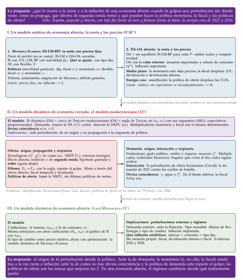
Fuente: Elaboración propia. El bloque I determina la renta y los precios con un modelo estático; el II añade la dinámica y las expectativas racionales en una economía cerrada, y sus implicaciones son el origen, la propagación y la respuesta a cada perturbación; el III abre ese modelo a las perturbaciones que llegan de fuera.
I. Un modelo estático de economía abierta: Mundell-Fleming y la oferta y la demanda agregadas
Empezamos por un modelo estático: cómo se determinan la renta y los precios en una economía abierta, qué pueden hacer con ellos la política monetaria y la fiscal según el régimen cambiario y qué ocurre cuando llega de fuera una perturbación de oferta.
Conclusión anticipada: 2 modelos, el segundo para resolver el límite del primero.
Con precios fijos, el modelo de Mundell y Fleming determina la renta y muestra que la eficacia de cada política depende del régimen cambiario y de la movilidad del capital.
Si se deja mover el nivel de precios, cada equilibrio de Mundell-Fleming da un punto de la demanda agregada, y con la oferta agregada se determinan la renta y los precios; la economía abierta añade la competitividad a la demanda y la cuña exterior a la oferta, por la que la energía cara trae estanflación.
El punto de partida: la IS-LM y la oferta y la demanda agregadas en una economía cerrada
La renta con precios fijos: la IS, \(Y=(\overline{A}-b\,i)/[1-c\,(1-t)]\), resume el mercado de bienes, y la LM, \(M/P=k\,Y-h\,i\), el de dinero; su corte da la renta y el tipo de interés. Una expansión fiscal sube la renta, pero también el tipo de interés, y expulsa inversión; una monetaria baja el tipo y sube la renta [ver tema 3.A.5].
De la IS-LM a la demanda agregada: si sube \(P\), caen los saldos reales, la LM se desplaza a la izquierda y la renta baja (efecto Keynes). Cada nivel de precios da un equilibrio IS-LM, y el conjunto de esos puntos es la DA, decreciente.
La oferta agregada: con salarios nominales que se revisan con retraso, es creciente a corto plazo, y a medio plazo, con las expectativas cumplidas, vertical en la producción natural [ver tema 3.A.28]. A corto plazo, las 2 políticas mueven la renta y los precios; a medio, solo los precios (y la fiscal, la composición del gasto).
Lo que falta para abrirla: el comercio en la IS, que depende de la renta exterior y del tipo de cambio real; un tercer mercado, el de divisas, y un régimen cambiario que decida qué variable se ajusta; y, cuando se mueven los precios, la competitividad en la DA y lo importado en la OA. Es lo que añaden los 2 modelos de este bloque.
I.1. El modelo de Mundell-Fleming: la renta con precios fijos
a) Idea
A principios de los 60, con el sistema de Bretton Woods en marcha y los capitales empezando a moverse, Fleming (1962), desde el FMI, y Mundell (1963) se preguntaron qué eficacia tienen la política monetaria y la fiscal cuando el capital es móvil, con tipo de cambio fijo y con tipo flexible.
Su respuesta fue el modelo IS-LM-BP: el IS-LM [ver tema 3.A.5] con el comercio en la curva IS y un tercer mercado, el de divisas, resumido en la curva BP.
Fue la referencia de la macroeconomía abierta durante 30 años y sigue siendo la intuición de partida de los bancos centrales y del FMI. Aquí es, además, el primer peldaño: la demanda agregada abierta (I.2) se construye con él.
b) Modelo
i) Supuestos
Precios fijos: \(P=P^*=1\). No hay inflación, el tipo nominal es el real (\(i=r\)) y el tipo de cambio real es el nominal (\(q=E\)).
País pequeño: la renta exterior, \(Y^*\), y el tipo de interés mundial, \(i^*\), están dados.
Expectativas estáticas del tipo de cambio: no se espera que cambie (\(\gamma E^e=0\)), de modo que la paridad no cubierta de intereses, \(i=i^*+\gamma E^e\), se reduce a \(i=i^*\) cuando el capital es perfectamente móvil [ver tema 3.B.13].
Activos nacionales y extranjeros sustitutos perfectos y agentes neutrales al riesgo: no hay prima de riesgo.
Condición de Marshall-Lerner: una depreciación real mejora el saldo comercial [ver tema 3.B.12].4
Los flujos de capital responden al diferencial de tipos: la cuenta financiera neta es \(\beta_K\,(i-i^*)\), con \(\beta_K\geq0\) la movilidad del capital.5 No es un supuesto sobre su valor: el modelo se resuelve para los 3 casos.
Sin esterilización: con tipo fijo, lo que el banco central compra o vende de divisas cambia la base monetaria.
ii) Desarrollo
Mercado de bienes: la curva IS abierta. A la demanda interna se suman las exportaciones netas, \(XN=x\,Y^*-m\,Y+\nu\,q\): crecen con la renta exterior (\(x\), propensión a exportar), caen con la propia (\(m\), propensión a importar) y crecen con el tipo de cambio real (\(\nu\), sensibilidad del saldo comercial). Con \(\overline{A}\equiv\overline{C}+\overline{I}+\overline{G}\) el gasto autónomo,
\[\text{IS:}\quad Y=\frac{\overline{A}-b\,i+x\,Y^*+\nu\,q}{1-c\,(1-t)+m}\tag{1}\]
En palabras: es la IS del modelo cerrado con 2 cambios. El multiplicador es menor, porque parte del gasto se va en importaciones (\(m\) en el denominador), y la curva se desplaza con la renta exterior y con el tipo de cambio: una depreciación (\(q\uparrow\)) la lleva a la derecha.
Volvamos a España: su producción depende de lo que crecen sus socios (\(Y^*\)), del tipo de cambio real frente a ellos (\(q\)) y del tipo de interés que se fija fuera (\(i^*\)). Con una apertura del 69 %, una caída de la demanda de la zona del euro se nota enseguida en su renta.
Mercado de dinero: la curva LM, la de la economía cerrada: \[\text{LM:}\quad \frac{M}{P}=k\,Y-h\,i . \tag{2}\] Con tipo fijo, la cantidad de dinero ya no la decide el banco central: es el crédito interno más las reservas, \(M=\mathrm{CI}+R\), y cambia con cada intervención en el mercado de divisas.
Mercado de divisas: la curva BP. Son los pares \((Y,i)\) con los que la balanza de pagos está en equilibrio, sin variación de reservas: el saldo comercial se financia con los flujos de capital,
\[\text{BP:}\quad \underbrace{x\,Y^*-m\,Y+\nu\,q}_{\text{saldo comercial}}+\underbrace{\beta_K\,(i-i^*)}_{\text{cuenta financiera neta}}=0\quad\Longrightarrow\quad \frac{\mathrm{d}i}{\mathrm{d}Y}\bigg|_{\mathrm{BP}}=\frac{m}{\beta_K}\tag{3}\]
En palabras: con más renta se importa más y el saldo comercial empeora; para financiarlo hace falta un tipo de interés más alto que atraiga capital. Por encima de la BP hay superávit (entran divisas); por debajo, déficit. Una depreciación la desplaza a la derecha.
Los 3 casos (gráfico 1):
movilidad nula (\(\beta_K=0\)): la BP es vertical; solo hay una renta compatible con el equilibrio comercial;
movilidad imperfecta (\(0<\beta_K<\infty\)): la BP es creciente; la movilidad es alta si la BP es más plana que la LM (\(m/\beta_K<k/h\)) y baja si es más inclinada;
movilidad perfecta (\(\beta_K\to\infty\)): la BP es horizontal en \(i=i^*\); el menor diferencial atraería o expulsaría capital sin límite.
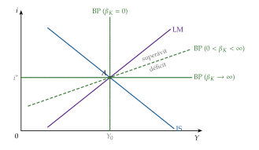
Equilibrio: las 3 curvas se cortan en un punto. Son 3 ecuaciones, y lo que se ajusta para que se corten depende del régimen:
con tipo fijo, las incógnitas son la renta, el tipo de interés y la cantidad de dinero: si hay superávit, el banco central compra divisas para que la moneda no se aprecie, la base monetaria crece y la LM se desplaza hasta pasar por el corte de la IS y la BP;
con tipo flexible, las incógnitas son la renta, el tipo de interés y el tipo de cambio: si hay superávit, la moneda se aprecia, las exportaciones netas caen y la IS y la BP se desplazan hasta cortarse sobre la LM, que controla el banco central.
Las políticas con movilidad perfecta. Con \(\beta_K\to\infty\), el tipo de interés no puede separarse del mundial. Son 4 casos (gráfico 2):
Tipo fijo, política fiscal: muy eficaz. Más gasto desplaza la IS a la derecha y presiona al alza sobre el tipo de interés; entra capital y la moneda tiende a apreciarse. Para evitarlo, el banco central compra divisas, la cantidad de dinero crece y la LM acompaña a la IS. No hay expulsión por el tipo de interés: la renta sube con todo el multiplicador abierto, \(1/[1-c\,(1-t)+m]\).
Tipo fijo, política monetaria: ineficaz. Más dinero baja el tipo de interés, sale capital y la moneda tiende a depreciarse; el banco central vende divisas, la cantidad de dinero vuelve a su nivel y la LM a su sitio. Solo cambia la composición del balance del banco central: más crédito interno y menos reservas.
Tipo flexible, política fiscal: ineficaz. La presión al alza sobre el tipo de interés atrae capital y aprecia la moneda; las exportaciones netas caen hasta que la IS vuelve a su sitio. La expulsión (crowding out) no es de la inversión, sino de las exportaciones netas: caen exactamente lo que sube el gasto.
Tipo flexible, política monetaria: muy eficaz. Baja el tipo de interés, sale capital y la moneda se deprecia; las exportaciones netas suben y la IS se desplaza a la derecha hasta cortar a la LM nueva en \(i=i^*\). La renta sube lo que pide el mercado de dinero, \(\Delta Y=\Delta(M/P)/k\): la política actúa por el canal del tipo de cambio [ver tema 3.A.37].
Una devaluación con tipo fijo sube las exportaciones netas y desplaza la IS: funciona como una expansión fiscal, pero cambiando el gasto de bienes extranjeros a nacionales en vez de aumentarlo. Es lo que Meade (1951) llamó una política de cambio del gasto (expenditure switching), frente a las de nivel del gasto (expenditure changing).6
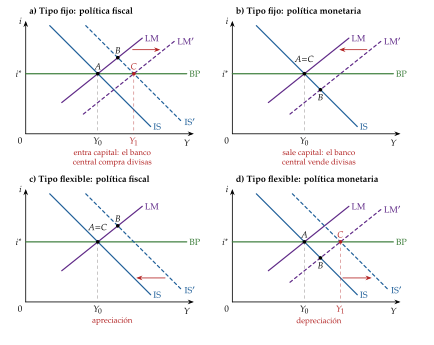
Fuente: Elaboración propia a partir de Fleming (1962) y Mundell (1963). Arriba, tipo de cambio fijo; abajo, flexible. A la izquierda, expansión fiscal; a la derecha, monetaria. \(A\), equilibrio inicial; \(B\), el punto al que lleva la política antes de que reaccionen las reservas o el tipo de cambio; \(C\), equilibrio final.
Las políticas con movilidad imperfecta. Con \(0<\beta_K<\infty\) la conclusión se matiza, y lo que decide es si la BP es más o menos inclinada que la LM. Resolviendo las 3 ecuaciones (anexo A):
\[\text{tipo fijo:}\quad \frac{\partial Y}{\partial\overline{G}}=\frac{\beta_K}{[1-c\,(1-t)]\,\beta_K+m\,(b+\beta_K)},\qquad \frac{\partial Y}{\partial M}=0\tag{4}\]
\[\text{tipo flexible:}\quad \frac{\partial Y}{\partial\overline{G}}=\frac{h}{D_X},\qquad \frac{\partial Y}{\partial(M/P)}=\frac{b+\beta_K}{D_X},\qquad D_X\equiv h\,[1-c\,(1-t)]+(b+\beta_K)\,k\tag{5}\]
En palabras: con tipo fijo, la fiscal gana eficacia con la movilidad (de 0 sin movilidad al multiplicador abierto con movilidad perfecta) y la monetaria no sirve nunca, porque el dinero es endógeno. Con tipo flexible, la monetaria gana eficacia con la movilidad (del multiplicador de la economía cerrada a \(1/k\)) y la fiscal la pierde (del multiplicador cerrado a 0).
Por qué con tipo flexible la economía parece cerrada: el tipo de cambio mantiene en equilibrio la balanza de pagos, de modo que el saldo comercial es lo que sale o entra de capital, \(XN=-\beta_K\,(i-i^*)\). La IS y la BP juntas son la IS de una economía cerrada con sensibilidad al tipo de interés \(b+\beta_K\) (anexo A).
La eficacia de cada política en los 8 casos está en la tabla 1.
| Movilidad del capital | Perfecta | Alta | Baja | Nula | |
|---|---|---|---|---|---|
| Fiscal | Tipo de cambio fijo | Muy eficaz | Eficaz | Poco eficaz | Ineficaz |
| Tipo de cambio flexible | Ineficaz | Poco eficaz | Eficaz | Muy eficaz | |
| Monetaria | Tipo de cambio fijo | Ineficaz | Ineficaz | Ineficaz | Ineficaz |
| Tipo de cambio flexible | Muy eficaz | Eficaz | Eficaz | Eficaz | |
Fuente: Elaboración propia a partir de Heijdra (2017) y de (4) y (5). Movilidad alta: la BP es menos inclinada que la LM; baja: más inclinada. Con tipo fijo, la monetaria solo cambia las reservas, más deprisa cuanto mayor es la movilidad; con tipo flexible, su eficacia crece con la movilidad, y sin movilidad es la de la economía cerrada.
iii) Implicaciones
El régimen decide qué se ajusta: con tipo fijo, el banco central pierde el control de la cantidad de dinero, que se vuelve endógena; con tipo flexible, lo recupera, y el tipo de cambio absorbe los desequilibrios.
Cada política en su régimen: con capital móvil, la monetaria funciona con tipo flexible y la fiscal con tipo fijo.
El dilema del régimen: con tipo fijo, la política monetaria no sirve con ninguna movilidad del capital. Con movilidad nula, la expansión del crédito interno empeora el comercio y se va en reservas a medio plazo; con movilidad perfecta, en el acto. Si se insiste, se agotan las reservas: es la crisis cambiaria de primera generación de P. Krugman (1979)7 [ver tema 3.B.17].
El trilema: de los 3 objetivos (un tipo de cambio fijo, capitales que entran y salen sin trabas y un banco central que fija sus tipos para la economía propia), solo se pueden tener 2 a la vez; como dice el refrán, no se puede nadar y guardar la ropa [ver tema 3.B.15].
Cada régimen es un lado del triángulo y renuncia al vértice opuesto (figura 2): la unión monetaria, a la autonomía; la flotación, al tipo fijo; los controles de capitales, a la movilidad.
No obliga a elegir una esquina: se puede ceder la mitad de cada objetivo, como en una flotación gestionada, y lo óptimo suele ser una solución interior.
Padoa-Schioppa (1988) añadió el libre comercio como 4.º objetivo, el cuarteto imposible (inconsistent quartet): fue el argumento para pasar del Sistema Monetario Europeo a la unión monetaria, que conserva el tipo fijo, la movilidad y el comercio y renuncia a la política monetaria propia.
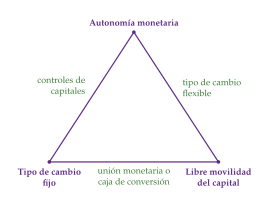
Fuente: Elaboración propia a partir de Obstfeld, Shambaugh y Taylor (2005). En los vértices, los 3 objetivos; en cada lado, el régimen que se queda con 2 de ellos y renuncia al vértice opuesto.
Aislamiento: con tipo flexible, una caída de la demanda exterior no mueve la renta, porque la depreciación compensa la pérdida de exportaciones (anexo A). Es el argumento clásico de Friedman (1953) a favor de la flotación.8 No aísla, en cambio, de las perturbaciones financieras: una subida del tipo de interés mundial mueve la renta en los 2 regímenes (III).
Un instrumento para cada objetivo: Meade (1951) planteó el conflicto entre el equilibrio interno (pleno empleo sin inflación) y el externo (equilibrio de la balanza de pagos), y Tinbergen (1952) mostró que hacen falta tantos instrumentos como objetivos.9 Swan (1963) lo dibujó con el gasto interno y el tipo de cambio real como instrumentos.
La asignación de Mundell: con tipo fijo y sin tocar el tipo de cambio, Mundell (1962) propuso asignar la política monetaria al equilibrio externo y la fiscal al interno, porque la monetaria mueve más la balanza de pagos (a través del capital) en relación con lo que mueve la renta. Con la asignación al revés, cada corrección aleja la economía de su objetivo: es el principio de la clasificación eficaz de los mercados [ver tema 3.B.12].
Los déficits gemelos: más déficit público empeora la cuenta corriente por la renta (más importaciones; domina con tipo fijo) y por el tipo de interés y el tipo de cambio (entrada de capitales, apreciación y menos exportaciones netas; con tipo flexible y movilidad perfecta, las exportaciones netas caen tanto como sube el gasto) [ver tema 3.B.11]. Fue la combinación de los Estados Unidos de principios de los 80: expansión fiscal, política monetaria contractiva, dólar fuerte y un déficit exterior creciente; las exportaciones netas pasaron del \(-0{,}6\) % del PIB en 1982 al \(-2{,}5\) % en 1984.
Volvamos a España. Con la peseta tenía política monetaria propia y podía devaluar, como hizo en 1992 y 1993 dentro del Sistema Monetario Europeo. Dentro del euro, frente a sus socios su tipo de cambio es fijo e irrevocable, el capital se mueve libremente y la política monetaria la decide el BCE para el conjunto: el trilema resuelto renunciando a la política monetaria propia. Para estabilizar lo propio le queda la política fiscal, que con capital móvil es muy eficaz, salvo cuando la deuda alta encarece la financiación [ver tema 3.A.40] [ver tema 4.B.4].
Los regímenes cambiarios en el mundo
Según la clasificación de hecho del FMI, a 30 de abril de 2023, el 44,8 % de sus miembros tenía un anclaje blando (soft peg), el 32,5 % flotaba, el 13,4 % tenía un anclaje duro (hard peg) y el 9,3 % otros regímenes gestionados.
Los países del euro aparecen en libre flotación: el euro flota frente al resto del mundo, aunque entre ellos no haya tipo de cambio [ver tema 3.B.15].
c) Extensiones
2 países grandes: si el país es grande, su política mueve el tipo de interés mundial y la renta de los demás [ver tema 3.A.37] [ver tema 3.B.19]:
con salarios nominales rígidos en los 2, una expansión fiscal sube el tipo mundial, aprecia la moneda propia y desvía demanda hacia el socio: la renta sube en los 2, es una política de locomotora;
una expansión monetaria deprecia la moneda propia y atrae demanda a costa del socio: es una política de empobrecer al vecino (beggar-thy-neighbour);
con salarios reales rígidos los papeles se invierten: la fiscal empobrece al vecino y la monetaria deja de tener efectos reales.
Expectativas: si los agentes anticipan el tipo de cambio de largo plazo y los precios se ajustan despacio, el tipo de cambio reacciona de más a corto plazo, la sobrerreacción (overshooting) [ver tema 3.B.14].
Fondos frente a flujos: el enfoque monetario de la balanza de pagos y los modelos de cartera tratan la balanza de pagos como el ajuste de los saldos de dinero y de activos, no como un flujo permanente [ver tema 3.B.14].
d) Evidencia empírica
El trilema se ve en los datos: con más de un siglo de datos, los países con tipo fijo y libre movilidad del capital siguen los tipos de interés del país de referencia; los que tienen controles de capitales o flotan conservan más autonomía monetaria. Con índices de los 3 objetivos desde 1970, su suma ponderada es aproximadamente constante: lo que se gana en uno se pierde en los otros.
La política fiscal, según el régimen: con tipo de cambio flexible el multiplicador del gasto es casi nulo y con tipo fijo, positivo; en las economías más abiertas, menor [ver tema 3.A.40].
La movilidad del capital no es perfecta: el ahorro y la inversión nacionales están muy correlacionados entre países, lo que no debería ocurrir si el capital se moviera sin fricciones [ver tema 3.B.11].
e) Valoración
Lo que aporta: con 3 curvas, explica por qué la misma política funciona en un país y no en otro, y es la base del trilema y de las uniones monetarias [ver tema 3.B.15] [ver tema 3.B.16].
Sus límites:
precios fijos: no dice nada de la inflación, que es la mitad del título;
flujos y no fondos: un diferencial de tipos atrae capital una vez, hasta recomponer las carteras, no para siempre;
expectativas estáticas y sin microfundamentos: no tiene restricción intertemporal, de modo que no distingue un déficit exterior sostenible de uno que no lo es.
El primer límite es el más urgente para el título: dejamos que los precios se muevan.
I.2. La demanda y la oferta agregadas en una economía abierta: la renta y los precios
a) Idea
El modelo que da título al tema nace de levantar el primer supuesto de Mundell-Fleming, el de los precios fijos.
Como en la economía cerrada [ver tema 3.A.5], basta con dejar libre el nivel de precios: a cada \(P\) le corresponde un equilibrio IS-LM-BP y, con él, una producción demandada; el conjunto de esos puntos es la demanda agregada (DA). La oferta agregada (OA) sale del mercado de trabajo. La economía abierta cambia las 2: la demanda gana el canal de la competitividad y la oferta paga lo que se compra fuera.
b) Modelo
i) Supuestos
Los de Mundell-Fleming (país pequeño, Marshall-Lerner, sin prima de riesgo), con movilidad perfecta del capital, \(i=i^*\), salvo que se diga otra cosa.
Nivel de precios nacional, \(P\), variable y exterior, \(P^*\), dado: el tipo de cambio real, \(q=EP^*/P\), ya no está fijado aunque lo esté el nominal.
Salarios nominales fijados con los precios esperados y revisados con retraso, como en el modelo WS-PS [ver tema 3.A.28], pero negociados con el índice de precios de consumo, \(P_C\), del que una parte \(\alpha\) es importada.10
Las empresas fijan el precio de lo que producen, \(P\), con un margen \(\mu\) sobre sus costes, entre ellos los insumos importados (la energía).
ii) Desarrollo
De la IS-LM-BP a la demanda agregada (gráfico 3). Un nivel de precios más alto tiene 2 efectos:
el efecto saldos reales o efecto Keynes: con más \(P\), menos \(M/P\), y la LM se desplaza a la izquierda, como en la economía cerrada;
el efecto competitividad, nuevo: con más \(P\), menos \(q\); los bienes nacionales se encarecen frente a los extranjeros, caen las exportaciones netas y la IS se desplaza a la izquierda.
Con movilidad perfecta, cada régimen se queda con uno de los 2 (anexo B):
con tipo fijo, la LM sigue a la IS, porque el dinero es endógeno: manda el efecto competitividad (panel a);
con tipo flexible, la apreciación lleva a la IS hasta la nueva LM: manda el efecto saldos reales (panel b).
La demanda agregada de cada régimen es
\[\text{tipo fijo:}\ \ Y=\frac{\overline{A}-b\,i^*+x\,Y^*+\nu\,\overline{E}P^*/P}{1-c\,(1-t)+m};\qquad \text{tipo flexible:}\ \ Y=\frac{M/P+h\,i^*}{k}\tag{6}\]
En palabras: con tipo fijo, la DA sale de la IS y se desplaza con la política fiscal, la demanda exterior y las devaluaciones, no con la cantidad de dinero; con tipo flexible, la DA sale de la LM, se desplaza con la política monetaria y no con la fiscal. Son los resultados de Mundell-Fleming pasados al plano \((Y,P)\).
Sin movilidad y con tipo flexible, el tipo de cambio mantiene equilibrado el comercio y la DA es la de la economía cerrada [ver tema 3.A.5].
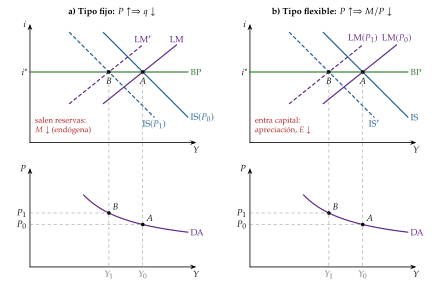
Fuente: Elaboración propia a partir de Blanchard (2021) y Heijdra (2017). Arriba, el modelo IS-LM-BP; abajo, la DA. Al subir el nivel de precios de \(P_0\) a \(P_1\), el equilibrio pasa de \(A\) a \(B\). Con tipo fijo (a), el tipo real se aprecia, la IS se desplaza a la izquierda y la LM la sigue porque salen reservas; con tipo flexible (b), los saldos reales caen, la LM se desplaza a la izquierda y la apreciación lleva la IS al nuevo corte.
La oferta agregada abierta: la cuña exterior. A corto plazo, la OA es creciente, porque los salarios nominales tardan en revisarse [ver tema 3.A.5]. La economía abierta añade 2 vías por las que el exterior entra en los costes:
los insumos importados: una subida del petróleo encarece producir; en el modelo de fijación de precios actúa como una subida del margen sobre el coste del trabajo y desplaza la OA hacia arriba;
el salario de consumo: con \(P_C=P^{1-\alpha}(EP^*)^{\alpha}\), \(P_C/P=q^{\alpha}\): una depreciación real encarece la cesta del trabajador frente a lo que vende su empresa.
En tasas, la OA de corto plazo es la curva de Phillips aumentada con expectativas, \(\pi_t-\pi^e_t=-a\,(U_t-U^n)+\varepsilon_t\), en la que \(\varepsilon_t\) es la perturbación de oferta: la misma que la \(u_t\) de la curva neokeynesiana (II), con la letra de cada modelo [ver tema 3.A.28].
A medio plazo, con las expectativas cumplidas, la oferta es vertical en la producción natural, \(Y^n\), la que corresponde a la NAIRU, \(U^n\) (la OA de largo plazo, OA\(_{\mathrm{LP}}\) en los gráficos). Con la curva de salarios escrita con el índice de consumo, \(W/P_C^e=F(U,Z)\cdot\mathrm{PAT}^e\), y la de precios, \(W/P=\mathrm{PAT}/(1+\mu)\) [ver tema 3.A.28], la NAIRU de una economía abierta cumple (anexo B)
\[F(U^n,Z)=\frac{1}{(1+\mu)\,q^{\alpha}}\tag{7}\]
En palabras: entre lo que cuesta un trabajador a la empresa y lo que este puede comprar hay una cuña: los impuestos sobre el trabajo, el margen y, en una economía abierta, el precio relativo de lo importado. Si los trabajadores se resisten a que baje su salario real de consumo, una depreciación real o un encarecimiento del petróleo (\(q\uparrow\), \(\mu\uparrow\)) sube la NAIRU y desplaza la OA de largo plazo a la izquierda.
El equilibrio y las políticas a medio plazo. El equilibrio de corto plazo está donde se cortan la DA y la OA de corto plazo; el de medio plazo, sobre la OA vertical (gráfico 4). Lo que Mundell-Fleming decía de las políticas cambia cuando los precios se ajustan:
con tipo flexible, el dinero es neutral a medio plazo: una expansión monetaria sube la renta a corto plazo por la depreciación; con \(Y>Y^n\), los salarios y los precios suben, y a medio plazo \(P\) y \(E\) han subido en la misma proporción que \(M\): el tipo de cambio real y la renta vuelven a su nivel;
con tipo fijo, la política fiscal desplaza exportaciones netas: la expansión sube la renta a corto plazo; a medio plazo, los precios suben, el tipo de cambio real se aprecia y la economía vuelve a \(Y^n\) con unas exportaciones netas menores en lo mismo que ha subido el gasto (gráfico 4, panel a). La expulsión que el tipo fijo evitaba a corto plazo llega por los precios;
sin tipo de cambio propio, el ajuste es lento: el tipo real solo cambia si los precios nacionales cambian frente a los de fuera. Si \(Y<Y^n\), la inflación nacional queda por debajo de la exterior, \(q\) sube poco a poco y las exportaciones netas devuelven la economía a \(Y^n\) (anexo B). Es la devaluación interna (internal devaluation): tarda y destruye empleo, porque los salarios nominales casi nunca bajan [ver tema 3.B.16];
una devaluación consigue de una vez lo que el ajuste de precios logra despacio: desplaza la DA y lleva la economía a \(Y^n\) sin esperar a los salarios (panel b, de \(A\) a \(B\)). Pero si la economía ya está en \(Y^n\), los precios acaban subiendo en la misma proporción y no queda nada, salvo más inflación y menos credibilidad. Fijar una paridad equivocada sale caro: fue la crítica de Keynes (1925) a la vuelta del Reino Unido al patrón oro en 1925 con la paridad de antes de la guerra, que dejó la libra sobrevalorada y obligaba a bajar salarios.
Volvamos a España: la devaluación interna fue su ajuste tras la crisis. El déficit por cuenta corriente, que llegó al 9,4 % del PIB en 2007, dio paso a un superávit desde 2012, con una caída de la demanda interna, unas exportaciones que crecieron y una moderación salarial [ver tema 4.A.21].
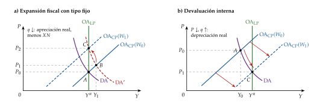
Fuente: Elaboración propia a partir de Blanchard (2021) y Carlin y Soskice (2015). Panel a: una expansión fiscal sube la renta a corto plazo (de \(A\) a \(B\)); a medio plazo, la subida de los precios aprecia el tipo real y la economía vuelve a \(Y^n\) con menos exportaciones netas (\(C\)). Panel b: desde una recesión (\(A\)), la devaluación interna baja los precios, deprecia el tipo real y lleva la economía a \(Y^n\) (\(C\)), despacio; una devaluación (\(E\uparrow\)) desplaza la DA y la lleva a \(Y^n\) de una vez (\(B\)), con precios más altos.
La inflación en una economía abierta: el índice de consumo mezcla lo nacional y lo importado. En tasas, con \(\pi_{H,t}\) la inflación de los bienes nacionales, \(\gamma_{E,t}\) la depreciación nominal y \(\gamma_{P^*,t}\) la inflación exterior,
\[\pi_t\simeq(1-\alpha)\,\pi_{H,t}+\alpha\,\big(\gamma_{E,t}+\gamma_{P^*,t}\big)\tag{8}\]
En palabras: el segundo sumando es la inflación importada. Una depreciación o un encarecimiento de lo importado suben los precios de consumo aunque los nacionales no cambien: es el efecto directo. Si los salarios y los márgenes reaccionan, vienen los efectos indirectos y de segunda ronda, que llevan la perturbación a \(\pi_{H,t}\) [ver tema 3.A.41].
iii) Implicaciones
El régimen decide el camino, no el destino: a medio plazo, la producción vuelve a \(Y^n\) y el tipo real es el mismo con los 2 regímenes, pero con tipo fijo el camino puede ser largo y doloroso.
Las políticas de demanda no mueven \(Y^n\): a medio plazo, la monetaria solo deja precios y la fiscal cambia la composición de la demanda. Solo lo que desplaza la OA de largo plazo (la cuña, la productividad) cambia la producción de equilibrio: es el terreno de las perturbaciones y de las políticas de oferta.
El exterior entra 2 veces en los precios: en la oferta, por la cuña, y en el índice de consumo, por la inflación importada. La cuña resta además eficacia a la devaluación: el tipo real más depreciado encarece el consumo y, si los salarios se resisten, rebaja la producción de equilibrio.
La economía cerrada es un caso particular: con \(\alpha=0\) desaparece la cuña, y sin movilidad y con tipo flexible la DA es la cerrada.
Una perturbación de oferta externa: el encarecimiento de la energía. Volvamos a España: importa en términos netos el 69 % de la energía que consume, frente al 57 % de la UE [ver tema 4.A.6]. Para ella, un encarecimiento de la energía es una perturbación de oferta que llega de fuera, y en la DA-OA abierta tiene 3 efectos (gráfico 5, panel a):
la OA de corto plazo sube: producir cuesta más, y la inflación de consumo sube además por el efecto directo de la energía (8);
la OA de largo plazo se desplaza a la izquierda si los salarios reales se resisten a bajar: la cuña exterior sube la NAIRU (7);
la DA cae: empeora la relación real de intercambio y parte de la renta se va a pagar la energía de fuera.
El resultado es la estanflación: menos producción y más inflación a la vez. La política de demanda solo puede elegir entre más paro y más inflación; de dónde viene la perturbación, cómo se propaga y cómo responder, con expectativas, se ve en el bloque II.
Una política de oferta actúa sobre el origen: desplaza a la derecha las 2 OA, con más producción y precios más bajos, que con el tipo de cambio dado deprecian el tipo real y ganan competitividad (gráfico 5, panel b).
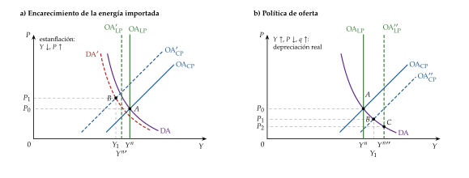
Fuente: Elaboración propia a partir de Blanchard (2021) y Bruno y Sachs (1985). Panel a: el encarecimiento de la energía importada sube la OA de corto plazo, desplaza a la izquierda la de largo plazo (si los salarios reales se resisten) y reduce algo la DA: menos producción y más precios (\(A\to B\)). Panel b: una política de oferta desplaza las 2 OA a la derecha: más producción a corto plazo (\(B\)) y a medio plazo (\(C\)), con precios más bajos y un tipo de cambio real más depreciado.
c) Extensiones
El modelo de demandas rivales: en el plano \((Y,q)\), la NAIRU abierta es una curva decreciente, la de equilibrio de las demandas rivales (EDR) de trabajadores, empresas y proveedores extranjeros sobre la renta; con la curva de equilibrio comercial y la del mercado de bienes, permite seguir a la vez el empleo, la inflación y el saldo exterior tras un encarecimiento de la energía (anexo B).
La estanflación con salarios reales rígidos: Bruno y Sachs (1985) explican la de la Europa de los 70 por unos salarios reales que no aceptaron el encarecimiento de las importaciones, que se convirtió en paro.
d) Evidencia empírica
El traspaso (pass-through) del tipo de cambio a los precios es menor y más lento de lo que dice la identidad: muchas importaciones se facturan en dólares y los importadores absorben parte en sus márgenes [ver tema 3.A.37]. En la zona del euro, una depreciación del 1 % sube los precios de importación un 0,3 % en un año, pero el IAPC solo un 0,04 %, y el traspaso es mayor cuando la depreciación nace de una perturbación monetaria.
La relación real de intercambio en 2021-2022: en 2020, el 80 % del crudo que importaba la zona del euro se facturaba en dólares; con la energía cara y el euro depreciándose desde mediados de 2021, la pérdida de renta real por el empeoramiento de la relación de intercambio fue de unos 1,3 puntos del PIB en el cuarto trimestre de 2021 frente a un año antes.
e) Valoración
Lo que aporta: con 2 curvas determina a la vez la renta y los precios, distingue el corto del medio plazo y separa lo que hace la demanda de lo que hace la oferta, que es lo que pide el título.
Sus límites: las expectativas, la curva de Phillips y la política monetaria entran sin microfundamentos; es estático, trabaja con niveles y no con la dinámica de la inflación, y no tiene un criterio de bienestar para comparar políticas.
Recapitulación de I: Mundell-Fleming decide qué política funciona según el régimen; la DA-OA abierta añade los precios, la cuña exterior y la inflación importada, y con ellas la estanflación. Pero las perturbaciones se desarrollan en el tiempo y las expectativas deciden su efecto: pasamos a un modelo dinámico con expectativas racionales, primero en una economía cerrada.
II. Un modelo dinámico de economía cerrada con expectativas racionales: el modelo neokeynesiano y las perturbaciones
Una vez estudiado el modelo estático, pasamos a uno dinámico con expectativas racionales, el modelo neokeynesiano, primero en una economía cerrada: así se ve con claridad de dónde viene cada perturbación, cómo se propaga y cómo debe responder la política económica. Empezamos por las de oferta, que son las que pusieron a prueba el modelo en los 70 y en 2022, y seguimos con las de demanda, que a menudo nacen de ellas.
Conclusión anticipada:
la IS dinámica y la curva de Phillips neokeynesiana son la demanda y la oferta agregadas con microfundamentos, y separan con claridad las perturbaciones de demanda de las de costes;
las perturbaciones de oferta mueven la renta y los precios en sentido contrario; las tecnológicas no plantean dilema a la política monetaria, pero las de costes sí, y la política de demanda solo puede repartir el golpe; las políticas de oferta son las únicas que mejoran las 2 a la vez;
las de demanda mueven la renta y los precios en el mismo sentido y la política monetaria puede estabilizarlas sin coste (divina coincidencia); cuando no puede, porque los tipos están en su límite inferior o porque no hay moneda propia, queda la fiscal;
las 2 se mezclan: una perturbación de oferta puede acabar siendo de demanda, y una de demanda puede chocar con una oferta que no responde.
a) Idea
La pregunta: ¿cómo se determinan la producción y la inflación cuando los precios son rígidos, pero los agentes optimizan y tienen expectativas racionales?
La respuesta de la nueva economía keynesiana (NEK) [ver tema 3.A.7] es un modelo de 3 ecuaciones: la IS dinámica hace de demanda agregada, la curva de Phillips neokeynesiana hace de oferta agregada y una regla de tipos de interés sustituye a la LM. Es la DA-OA del apartado I.2 con microfundamentos, en inflación y no en niveles de precios, y es el que usan hoy los bancos centrales.
b) Modelo
i) Supuestos
Economía cerrada (se abre en el bloque III), sin capital y sin dinero más que como unidad de cuenta (cashless).
Hogares representativos de vida infinita, con aversión relativa al riesgo \(\theta\) (la inversa de la elasticidad de sustitución intertemporal) y desutilidad del trabajo con la inversa de la elasticidad de Frisch, \(\varphi\).
Empresas en competencia monopolística à la Dixit y Stiglitz (1977),11 con elasticidad de sustitución \(\sigma\) [ver tema 3.A.18], que producen con trabajo y una tecnología \(A_t\).
Precios rígidos à la Calvo (1983): cada periodo, una empresa no revisa su precio con probabilidad \(\eta\).
4 perturbaciones: tecnológica (\(A_t\)), de demanda (preferencias o gasto público), de costes (\(u_t\)) y de política monetaria (\(\varepsilon_t\)). Las ecuaciones se log-linealizan alrededor de un estado estacionario con inflación cero; \(x_t\equiv y_t-y^n_t\) es la brecha de producción (output gap), la distancia a la producción que habría con precios flexibles.
ii) Desarrollo
La demanda: la curva IS dinámica. De la ecuación de Euler del hogar, log-linealizada [ver tema 3.A.29]:
\[x_t=\mathbb{E}_t[x_{t+1}]-\frac{1}{\theta}\Big(i_t-\mathbb{E}_t[\pi_{t+1}]-r^n_t\Big)\tag{9}\]
En palabras: si el tipo real supera al tipo de interés natural, \(r^n_t\) (el que habría con precios flexibles), los hogares aplazan consumo y la brecha cae. Las perturbaciones de demanda (preferencias, gasto público) entran subiendo \(r^n_t\); una mejora tecnológica transitoria lo baja, porque se espera que la producción natural vuelva a caer.
Es prospectiva: la brecha de hoy depende de toda la senda esperada de tipos reales. Por eso importan los anuncios del banco central.
La oferta: la curva de Phillips neokeynesiana (NKPC). Las empresas que revisan su precio lo fijan con un margen sobre los costes marginales que esperan mientras siga vigente:
\[\pi_t=\beta\,\mathbb{E}_t[\pi_{t+1}]+\kappa\,x_t+u_t,\qquad \kappa\equiv\frac{(1-\eta)(1-\beta\eta)}{\eta}\,(\theta+\varphi)\tag{10}\]
En palabras: la inflación depende de la esperada y de la brecha, que mide el coste marginal real; cuanto más rígidos los precios, menor \(\kappa\) y más plana la curva. \(u_t\) es la perturbación de costes (márgenes deseados, impuestos, salarios) que no viene de la brecha: es la \(\varepsilon_t\) de la OA del apartado I.2.
La política monetaria: la regla de Taylor [ver tema 3.A.36], que sustituye a la LM: \[i_t=\rho+\phi_\pi\,\pi_t+\phi_x\,x_t+\varepsilon_t,\qquad \rho\equiv-\ln\beta, \tag{11}\] con \(\varepsilon_t\) lo que hace el banco central al margen de la regla. Taylor (1993) la propuso como una descripción de la Reserva Federal, con \(\phi_\pi=1{,}5\) y \(\phi_x=0{,}5\).
La DA y la OA neokeynesianas en el plano \((x_t,\pi_t)\). Con expectativas dadas (perturbaciones transitorias), quedan 2 rectas (gráfico 6; anexo C):
la DA (la IS dinámica con la regla dentro), decreciente: más inflación sube el tipo de interés y reduce la brecha. La desplazan el tipo natural (\(r^n_t\)) y la política monetaria (\(\varepsilon_t\)): \[\pi_t=-\frac{\theta+\phi_x}{\phi_\pi}\,x_t+\frac{r^n_t-\rho-\varepsilon_t}{\phi_\pi} ; \tag{12}\]
la OA, la NKPC, creciente con pendiente \(\kappa\); la desplaza \(u_t\).
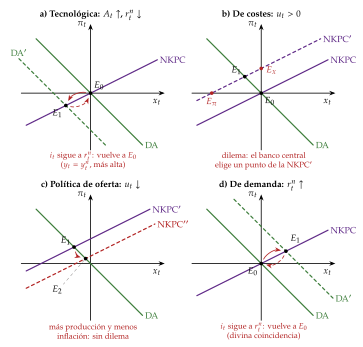
Fuente: Elaboración propia a partir de Galí (2015) y Clarida, Galí y Gertler (1999), con perturbaciones transitorias. Panel a: una mejora tecnológica transitoria baja el tipo natural y la DA; si el tipo de interés sigue al natural, la producción sube hasta la natural y la economía vuelve a \(E_0\). Panel b: una perturbación de costes sube la NKPC; el banco central solo puede elegir entre \(E_\pi\) (inflación en el objetivo, más recesión), \(E_x\) (brecha cerrada, más inflación) o puntos intermedios como \(E_1\). Panel c: una política de oferta baja la NKPC y mejora las 2 (\(E_2\)). Panel d: una perturbación de demanda mueve la brecha y la inflación en el mismo sentido; si el tipo de interés sigue al natural, vuelve a \(E_0\) (divina coincidencia).
Por qué el modelo neokeynesiano se puede dibujar en el plano \((x_t,\pi_t)\), y con qué supuestos
En sentido estricto, no se puede: el modelo canónico es un sistema de ecuaciones en diferencias estocásticas con expectativas, no un par de curvas estáticas. La NKPC y la IS contienen \(\mathbb{E}_t[\pi_{t+1}]\) y \(\mathbb{E}_t[x_{t+1}]\), que son endógenas, y no hay una «curva de oferta» ni una «de demanda» que se desplacen.
Los supuestos que hay detrás del gráfico:
las ecuaciones están linealizadas alrededor de un estado estacionario sin inflación ni brecha, y solo valen para desviaciones pequeñas;
las perturbaciones siguen procesos AR(1), por ejemplo \(u_t=\rho_u\,u_{t-1}+\epsilon^u_t\), con \(0\leq\rho_u<1\) (\(\rho_u\) y \(\epsilon^u_t\), locales);
se busca la solución de variables de estado mínimas, de la forma \(x_t=\psi_x\,u_t\) y \(\pi_t=\psi_\pi\,u_t\) (con \(\psi_x\) y \(\psi_\pi\) por determinar);
de ahí, expectativas proporcionales: \(\mathbb{E}_t[x_{t+1}]=\rho_u\,x_t\) y \(\mathbb{E}_t[\pi_{t+1}]=\rho_u\,\pi_t\).
De dónde sale la representación: con esas expectativas, la NKPC queda \(\pi_t=\frac{\kappa}{1-\beta\rho_u}\,x_t+\frac{u_t}{1-\beta\rho_u}\), creciente (la «oferta»), y la IS con la regla de Taylor (sin \(\varepsilon_t\) y con \(\hat r^n_t\equiv r^n_t-\rho\)), \[\pi_t=-\frac{(1-\rho_u)\,\theta+\phi_x}{\phi_\pi-\rho_u}\,x_t+\frac{\hat r^n_t}{\phi_\pi-\rho_u},\] decreciente si \(\phi_\pi>\rho_u\) (la «demanda»). El gráfico 6 y la ecuación (12) son el caso de perturbaciones transitorias, \(\rho_u=0\), en el que las expectativas son nulas.
Cómo se lee: las 2 rectas relacionan las respuestas de equilibrio de \(x_t\) y \(\pi_t\) a una perturbación con una persistencia dada; no son sendas por las que se mueva la economía. Si cambia la persistencia o la regla, cambian las 2 rectas. En la economía abierta (III) vale lo mismo con \(\pi_{H,t}\), \(\theta_\alpha\) y \(\kappa_\alpha\).
La forma reducida: los multiplicadores de las 2 políticas. Resolviendo las 2 rectas (anexo C),
\[x_t=\frac{\hat r^n_t-\phi_{\pi}\,u_t-\varepsilon_t}{\theta+\phi_x+\phi_{\pi}\,\kappa}\tag{13}\]
En palabras: la brecha se mueve por 3 fuentes, el tipo natural, los costes y la política monetaria. El multiplicador de la política monetaria, \(-1/(\theta+\phi_x+\phi_\pi\kappa)\), y el de la fiscal (que actúa subiendo \(r^n_t\)) comparten denominador y son menores cuanto más agresiva es la regla con la inflación: la política monetaria sistemática contrarresta cualquier impulso a la demanda.
iii) Implicaciones
El dinero no es neutral a corto plazo, pero sí a largo: con precios rígidos, subir \(i_t\) sube el tipo real, baja la brecha y, con ella, la inflación; a largo plazo, con \(\beta\) casi 1, la NKPC es casi vertical, como la OA de largo plazo del apartado I.2.
Demanda frente a costes: una perturbación de demanda desplaza la DA y mueve la brecha y la inflación en el mismo sentido; una de costes desplaza la NKPC y las mueve en sentido contrario. Es la distinción que ordena el resto de estas implicaciones.
La divina coincidencia: si no hay perturbaciones de costes (\(u_t=0\)), estabilizar la inflación estabiliza también la brecha (\(\pi_t=0\Rightarrow x_t=0\)), y basta con que el tipo de interés siga al natural.
Un criterio de bienestar: la pérdida de bienestar depende de la volatilidad de la inflación y de la brecha, de modo que se pueden comparar reglas y regímenes [ver tema 3.A.36].
Las perturbaciones de oferta: origen y propagación.
Definición: una perturbación de oferta cambia, a cada nivel de precios, lo que las empresas quieren producir: desplaza la OA. Por eso mueve la producción y los precios en sentido contrario.
Su origen, en 3 tipos:
tecnológicas: cambios de la productividad, que mueven la producción natural; son las del ciclo real [ver tema 3.A.42]. En el modelo neokeynesiano, una mejora transitoria baja el tipo natural: la producción sube, pero menos que la natural, y la brecha y la inflación caen (gráfico 6, panel a);
de costes y márgenes: salarios, márgenes o impuestos indirectos que suben sin que cambie la productividad; son la \(u_t\) de la NKPC, que sube: menos brecha y más inflación (panel b) [ver tema 3.A.41];
externas: el precio de la energía y de las materias primas, los cortes de las cadenas de suministro o el clima. En una economía abierta son las más frecuentes, y suelen ser a la vez de oferta (encarecen producir) y de demanda (transfieren renta a los exportadores de energía).
En el modelo estático ya se vio que un encarecimiento de la energía lleva a España a la estanflación (gráfico 5); en el neokeynesiano es, sobre todo, una subida de \(u_t\), y en una economía abierta llega además por la inflación importada (III).
Su propagación: del efecto directo a la segunda ronda.
El efecto directo es la subida del precio de lo que se consume directamente (los carburantes, la electricidad); el indirecto, la de los bienes que usan energía para producirse; la segunda ronda, la de los salarios y los márgenes que intentan recuperar lo perdido. Las 2 primeras son un cambio de precios relativos y pasan; la tercera convierte la perturbación en inflación persistente [ver tema 3.A.41].
Un cambio de precios relativos sube el nivel general porque, con costes de cambiar los precios, suben antes los pocos precios que quieren subir mucho que los muchos que quieren bajar un poco.
La heterogeneidad sectorial: las perturbaciones no se diluyen.
Si las empresas grandes pesan mucho, lo que les pasa no se compensa en el agregado: es la hipótesis granular.
Por la red de compras y ventas entre sectores, una perturbación de oferta en uno viaja aguas abajo, hacia sus clientes, que lo usan como insumo, con un efecto total mayor que el directo (anexo D).12 Así, los semiconductores en 2021 o la energía en 2022 movieron la economía mucho más de lo que pesan en el PIB [ver tema 3.A.31].
La respuesta a las perturbaciones de oferta.
Las tecnológicas no plantean dilema: si el tipo de interés sigue al natural, la producción sube hasta la natural y la inflación no se mueve (gráfico 6, panel a). Para la política monetaria se tratan como las de demanda: lo que importa no es si mueven la oferta, sino si mueven la NKPC.
Las de costes sí: el dilema. Contraer la demanda frena la inflación pero agrava la caída de la producción; acomodar la sostiene, pero arriesga los efectos de segunda ronda [ver tema 3.A.41].
En el modelo neokeynesiano no hay divina coincidencia: el banco central solo puede elegir un punto de la NKPC nueva, entre la inflación en el objetivo con más recesión (\(E_\pi\)) y la brecha cerrada con más inflación (\(E_x\)); con su regla, reparte el golpe (\(E_1\); panel b) [ver tema 3.A.36]. Cuanto más pesan las perturbaciones de costes y más rígidos son los precios, menos agresiva debe ser la respuesta a la inflación.
La coincidencia se rompe también sin perturbaciones de costes si los salarios reales son rígidos: estabilizar la inflación ya no estabiliza la brecha que importa para el bienestar.
Cuándo mirar a través (look through): ante una perturbación pasajera y con las expectativas bien ancladas, el banco central puede dejar pasar el efecto directo; si es persistente o contagia a salarios y márgenes, tiene que responder, y cuanto antes, mejor.
La política fiscal: con 2 objetivos (renta e inflación) y una perturbación de costes, la monetaria no basta.
Las ayudas deben ser temporales y focalizadas en los hogares más vulnerables: las generalizadas a la energía sostienen la demanda que la política monetaria quiere frenar. Las medidas europeas bajaron la inflación de 2022 en 1 o 2 puntos, pero la mayoría no se dirigió a quien más lo necesitaba.
Las medidas sobre el precio, como el tope al gas de la generación eléctrica en España y Portugal, bajan la inflación medida, pero no la cantidad de energía que se demanda.
Las políticas de oferta: atacar el origen. Una política de oferta aumenta la capacidad productiva de la economía o reduce sus costes. Actúa en 3 frentes:
los mercados: la competencia en los mercados de bienes baja los márgenes; las reformas del mercado de trabajo, la cuña fiscal y las prestaciones bajan la NAIRU [ver tema 3.A.28];
la productividad: el capital humano, la innovación, las infraestructuras y la calidad de las instituciones suben la producción potencial [ver tema 3.A.45];
la energía: diversificar las fuentes y aumentar las renovables reduce la exposición a las perturbaciones de fuera [ver tema 4.A.6].
Sus efectos: en el modelo neokeynesiano, bajar los márgenes o los costes reduce \(u_t\) y baja la NKPC: la brecha y la inflación mejoran a la vez, sin dilema, porque la política actúa sobre el origen de la perturbación (gráfico 6, panel c). En la DA-OA abierta, desplaza a la derecha las 2 OA (gráfico 5, panel b).
Las políticas de rentas: los acuerdos sobre salarios y precios con que se quiso frenar la estanflación de los 70 buscaban lo mismo por otra vía: bajar la cuña sin pasar por el paro [ver tema 3.A.5].
Un pacto de rentas entre el Gobierno, los sindicatos y las empresas modera los salarios que se piden y reparte la caída del salario real que impone la perturbación: menos paro y menos inflación. Fue la vía de los países escandinavos y de Austria tras el petróleo.
Que funcione depende de cómo se negocia: con negociación muy centralizada, los sindicatos tienen en cuenta el efecto de sus salarios sobre los precios y el paro; muy descentralizada, la competencia contiene los salarios; por sectores, ni lo uno ni lo otro, y el salario real y el paro son los más altos.13
En la agenda actual: el informe Draghi sitúa la brecha de productividad con Estados Unidos en el centro del problema europeo; el Mecanismo de Recuperación y Resiliencia condiciona sus fondos a reformas e inversiones, y la OCDE ha sustituido su informe Going for Growth por uno nuevo sobre los fundamentos del crecimiento. No son la «economía de la oferta» (supply-side economics) de los 80, que esperaba que bajar los impuestos se pagara solo, sino reformas lentas, con perdedores, que necesitan una demanda que no se hunda mientras dan fruto.
España ante la energía cara de 2022
La «excepción ibérica» topó desde el 14 de junio de 2022 el precio del gas de las centrales que fijan el precio de la electricidad: 40 euros por megavatio hora durante 6 meses y después una senda creciente, hasta 65 euros en diciembre de 2023, cuando terminó.
España bajó el IVA de la electricidad del 21 % al 10 % en 2021 y al 5 % en la segunda mitad de 2022, y subvencionó con 20 céntimos cada litro de carburante de abril a diciembre de 2022: medidas generales, no focalizadas.
En España la energía llegó a subir un 60,3 % en marzo de 2022, pero en octubre solo un 7,9 %, frente al 41,5 % de la zona del euro: había subido antes y se sumaron el tope al gas y la rebaja del IVA.
Las perturbaciones de demanda y su interacción con las de oferta.
Definición: una perturbación de demanda cambia, a cada nivel de precios, lo que se quiere gastar: desplaza la DA y mueve la producción y los precios en el mismo sentido.
Su origen: en el modelo neokeynesiano, casi todas entran subiendo o bajando el tipo natural (gráfico 6, panel d):
preferencias y confianza: un aumento del ahorro por precaución, como tras la crisis de 2008, baja \(r^n_t\);
la política fiscal: más gasto público sube \(r^n_t\);
el crédito y la riqueza: una caída del precio de los activos o un endurecimiento del crédito reducen el gasto;
la política monetaria: una subida de tipos al margen de la regla (\(\varepsilon_t>0\)) desplaza la DA a la izquierda;
la demanda exterior, en una economía abierta (III).
Su propagación:
el multiplicador: el gasto de unos es la renta de otros, y en la DA-OA el efecto se reparte entre producción y precios según la pendiente de la OA;
el acelerador financiero: la prima de financiación externa sube cuando cae el patrimonio de los prestatarios, de modo que una perturbación que reduce ese patrimonio encarece el crédito y deprime aún más la inversión;14
los hogares que viven al día: si una parte de los hogares consume lo que gana, el consumo sube tras un aumento del gasto público, en vez de caer como predice la equivalencia ricardiana [ver tema 3.A.33];
la red de producción: una perturbación de demanda en un sector viaja aguas arriba, hacia sus proveedores (anexo D).
La interacción con las perturbaciones de oferta: las 2 rara vez llegan solas.
De la oferta a la demanda: si una perturbación cierra unos sectores, los bienes de los distintos sectores se sustituyen mal y los hogares no pueden asegurarse, la renta perdida reduce el gasto en los demás, y la caída de la demanda puede superar a la de la oferta. Es la perturbación de oferta keynesiana (Keynesian supply shock) de la Covid; con un solo sector no puede darse [ver tema 3.A.40].
De la demanda a la oferta: en 2021 la demanda se recuperó deprisa, empujada por la política fiscal y el ahorro acumulado, y se encontró con una oferta atascada: con la OA casi vertical en los sectores con cuellos de botella (bottlenecks), la demanda se convirtió en precios. El origen de la inflación de 2021-2023 fueron la energía, los alimentos y los atascos; su persistencia, un mercado de trabajo muy tenso.
Por eso no hay una política para cada perturbación «pura»: hay que saber qué parte de lo que se ve es de demanda y qué parte de oferta.
La Covid: 2 respuestas a una perturbación de oferta keynesiana
La respuesta que pide no es un estímulo genérico, sino ayudas a los trabajadores sin liquidez, que gastan lo que reciben, y a las empresas para conservar los empleos.
Estados Unidos reforzó las prestaciones por desempleo y dio transferencias directas: su tasa de paro pasó del 3,5 % en febrero de 2020 al 14,8 % en abril.
La zona del euro optó sobre todo por mantener el vínculo laboral con regulaciones temporales de empleo, como los ERTE en España: su paro pasó del 7,3 % al 7,4 %, y el de España, del 13,6 % al 15,3 % [ver tema 4.A.29]. Conservar el empleo conserva el capital humano propio de cada puesto para la recuperación.
La respuesta a las perturbaciones de demanda.
La política monetaria: la divina coincidencia. Con una perturbación de demanda y sin perturbaciones de costes, basta con que el tipo de interés siga al natural: la DA vuelve a su sitio y la economía regresa a \(E_0\), con la inflación en el objetivo y la brecha cerrada a la vez (gráfico 6, panel d). Un instrumento basta para 2 objetivos porque se mueven juntos. Es el fundamento de los objetivos de inflación [ver tema 3.A.36].
Cuando la monetaria no llega: la política fiscal.
Su multiplicador depende de la regla: en la forma reducida (13), el gasto sube \(r^n_t\) y la brecha, pero tanto menos cuanto más agresiva es la respuesta del banco central a la inflación.
En el límite inferior de los tipos, el banco central no los sube tras la expansión, el gasto sube la inflación esperada y baja el tipo real, y el multiplicador puede ser bastante mayor que 1: es el caso extremo de que la regla monetaria decide el multiplicador.
Sin moneda propia, la fiscal es el único instrumento para las perturbaciones de cada país (III) [ver tema 4.B.4].
Si los hogares son ricardianos, una expansión financiada con deuda se compensa en parte con más ahorro; si una parte vive al día, el efecto es mayor.
La combinación de políticas (policy mix): con el tono de la monetaria medido por el tipo real frente al natural y el de la fiscal por el impulso fiscal, hay 4 cuadrantes (figura 3) [ver tema 3.A.40].
Ante una perturbación de demanda, las 2 deben ir en el mismo sentido, como en 2009 y en 2020; ante una de costes con expectativas en peligro, la monetaria contractiva y la fiscal solo focalizada, como en 2022-2023.
Detrás está la pregunta de quién se ajusta para cumplir la restricción del Estado: con dominación monetaria, la fiscal; con dominación fiscal, la monetaria [ver tema 3.A.39].

Fuente: Elaboración propia. Ejemplos de cada cuadrante: las 2 expansivas, en 2009 y 2020; las 2 contractivas, en 2022-2023; fiscal expansiva con monetaria contractiva, los Estados Unidos de los 80 y el Reino Unido en 2022; fiscal contractiva con monetaria expansiva, la zona del euro desde 2012. Que la combinación sea coherente no exige que las 2 políticas vayan en el mismo sentido.
c) Extensiones
Inercia de la inflación: con indexación o con empresas que siguen una regla sencilla sale una curva de Phillips híbrida, con inflación pasada, que da la persistencia que se ve en los datos [ver tema 3.A.41].
Hogares heterogéneos: si parte de los hogares consume lo que gana, la política fiscal y la monetaria actúan sobre todo a través de la renta y no del tipo de interés; es la propagación de las perturbaciones de demanda que se ha visto en las implicaciones.
La economía abierta: Galí y Monacelli (2005) mantienen la estructura con otros coeficientes y 2 inflaciones (III).
d) Evidencia empírica
Tecnología y horas: tras una mejora tecnológica las horas trabajadas caen, como predice el modelo con precios rígidos y al contrario que el del ciclo real [ver tema 3.A.42].
La curva de Phillips es plana: la inflación respondió poco a la brecha durante décadas, lo que se lee como un \(\kappa\) bajo o como expectativas bien ancladas, y se empinó con la energía y los cuellos de botella de 2021-2022 [ver tema 3.A.41].
La identificación: las perturbaciones no se observan y llegan mezcladas. Los vectores autorregresivos estructurales (structural VAR) de Sims (1980)15 las separan con restricciones que vienen de la teoría: Blanchard y Quah (1989) suponen que solo las de oferta tienen efectos permanentes sobre la producción, y Kilian (2009) muestra que no es lo mismo un corte de la oferta de crudo que un aumento de la demanda mundial [ver tema 3.A.37].
Cómo se identifican las perturbaciones
Blanchard y Quah: con la producción y el paro de Estados Unidos, la restricción es que la perturbación de demanda, \(\varepsilon^{\mathrm D}_t\), no tiene efecto a largo plazo sobre la producción (\(\varepsilon^{\mathrm D}_t\) y \(\varepsilon^{\mathrm S}_t\), con superíndice en redonda, son locales de esta caja): \[\lim_{k\to\infty}\frac{\partial y_{t+k}}{\partial\varepsilon^{\mathrm D}_t}=0 . \tag{14}\] El efecto de la demanda sobre la producción y el paro tiene forma de joroba y desaparece en 2 a 5 años; el de la oferta, \(\varepsilon^{\mathrm S}_t\), crece con el tiempo y se estabiliza a los 5. Una perturbación de oferta favorable puede subir algo el paro al principio, y después lo baja y vuelve despacio a su nivel (gráfico 7). Cuánto pesa cada una depende de los supuestos: la demanda explica entre el 40 y más del 95 % de las fluctuaciones a un año.
Gráfico 7.– Las respuestas a una perturbación de demanda y a una de oferta en el modelo de Blanchard y Quah 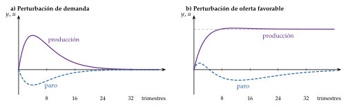
Fuente: Elaboración propia a partir de Blanchard y Quah (1989). Esquema cualitativo, no las estimaciones. La demanda mueve la producción y el paro en sentidos opuestos, en joroba, y su efecto desaparece; la oferta deja la producción en un nivel permanentemente más alto y no afecta al paro a largo plazo.
Galí: la tecnología es la única perturbación con efectos permanentes sobre la productividad del trabajo; tras una mejora, las horas caen, y la tecnología explica poco del ciclo.
Kilian: separa las perturbaciones de la oferta de crudo, de la demanda mundial de materias primas y de la demanda específica de petróleo; cada una tiene efectos distintos, y la subida de los 2000 se debió sobre todo a la demanda mundial.
Hamilton: todas las recesiones de Estados Unidos desde la Segunda Guerra Mundial salvo una vinieron precedidas de una fuerte subida del petróleo.
Las políticas de oferta, en los datos:
a largo plazo, ganan: desregular los mercados de bienes reduce las rentas y sube el empleo y el salario real; desregular el de trabajo redistribuye las rentas y tiene costes a corto plazo para los trabajadores;
a corto plazo, depende del ciclo: las de la protección del empleo y las prestaciones por desempleo ayudan en las expansiones y pueden ser contractivas cuando hay holgura, y las rebajas de la cuña fiscal y las políticas activas de empleo funcionan mejor en las recesiones;
con los tipos en el límite inferior, bajar los márgenes reduce la inflación esperada, sube el tipo real y puede contraer la demanda a corto plazo;
en España, las reformas laborales de 2012 y de 2021 son ejemplos de políticas de oferta en el mercado de trabajo; la OCDE atribuyó a la de 2012 una contribución a la moderación salarial [ver tema 4.A.16].
2 episodios de perturbaciones de oferta:
Los 70: tras el embargo de los países árabes de la OPEP de 1973 y la revolución iraní de 1979, el precio del petróleo se multiplicó casi por 4 entre 1973 y 1974 y casi se triplicó entre 1978 y 1980. Las economías europeas, con salarios indexados y una política monetaria que acomodó, tuvieron a la vez un paro creciente e inflación de 2 cifras; estimular la demanda cuando el equilibrio con inflación estable ya exigía más paro solo sirvió para que la inflación siguiera subiendo. En España, más dependiente del petróleo y con salarios indiciados, la inflación llegó al 28,4 % en agosto de 1977 [ver tema 4.A.27].
Los 2000: el petróleo subió con fuerza, pero sin estanflación. Blanchard y Galí (2010) lo explican por 4 razones: hubo menos perturbaciones a la vez, el petróleo pesaba menos en la producción, los salarios reales eran más flexibles y la política monetaria era más creíble.16 Además, aquella subida la empujó sobre todo la demanda mundial, no un corte de la oferta.
La lección de los 2 episodios: con una perturbación de oferta, la política de demanda decide cuánto dura el daño, y la de oferta, cuánto queda. Y la lección de la Covid y de 2021 es que no todas las perturbaciones de oferta se quedan en la oferta.
Las cifras de los 70
1973: el 17 de octubre, en plena guerra del Yom Kipur, los países árabes de la OPEP anunciaron un embargo; en noviembre producían 4,4 millones de barriles diarios menos que en septiembre, el 7,5 % de la producción mundial, y el 1 de enero de 1974 los países del golfo Pérsico duplicaron el precio. El precio medio del crudo pasó de 2,8 a 11,0 dólares por barril entre 1973 y 1974.
1979-1980: la revolución iraní restó 4,8 millones de barriles diarios, el 7 % de la producción mundial, entre octubre de 1978 y enero de 1979, y la guerra entre Irán e Irak, desde septiembre de 1980, otro 6 %; el precio pasó de 12,9 dólares por barril en 1978 a 36,9 en 1980.
Los efectos: en la OCDE la inflación llegó al 15,5 % en 1974 y al 13,6 % en 1980, y el crecimiento cayó al 0,4 % en 1975 y al 0,2 % en 1982. España apenas creció en 1975 (0,5 %) y en 1979 (0 %).
e) Valoración
Lo que aporta: es estructural y microfundamentado, de modo que la crítica de Lucas17 no le alcanza [ver tema 3.A.6]; separa con claridad las perturbaciones de demanda de las de costes y da un criterio de bienestar para la política.
Sus límites: necesita inercia añadida para reproducir la inflación; la \(u_t\) es poco más que un residuo; la versión básica no tiene sector financiero, y la orientación futura (forward guidance) tiene en él efectos poco creíbles.
Recapitulación de II: el origen decide la política. Ante una perturbación de demanda (o tecnológica), la monetaria estabiliza a la vez renta e inflación, y si no puede, la fiscal; ante una de costes, la política de demanda solo reparte el golpe y la de oferta es la única que mejora las 2.
Hasta aquí, la economía era cerrada. Pero en una economía como la española muchas perturbaciones llegan de fuera, y la respuesta depende de algo que la economía cerrada no tiene: el régimen cambiario.
III. Un modelo dinámico de economía abierta: la nueva macroeconomía abierta de Galí y Monacelli
Por último, abrimos el modelo neokeynesiano. Es la versión dinámica y con expectativas racionales de Mundell-Fleming, y con él vemos cómo llegan las perturbaciones de fuera y qué régimen cambiario y qué regla de política las amortiguan mejor.
Conclusión anticipada: la apertura cambia los coeficientes, no la forma; el banco central debe estabilizar la inflación de lo que se produce y dejar flotar el tipo de cambio, que amortigua las perturbaciones reales de demanda pero no las financieras ni, para un importador, las de la energía; sin moneda propia, la política fiscal y las de oferta hacen el trabajo.
a) Idea
Con Obstfeld y Rogoff (1995) nace la nueva macroeconomía abierta (New Open Economy Macroeconomics), que traslada a la economía abierta los modelos con agentes que optimizan, competencia monopolística y precios rígidos.
Galí y Monacelli (2005) construyen la versión para una economía pequeña del modelo del bloque II: es la versión moderna de Mundell-Fleming. Responden a 2 preguntas: ¿qué cambia la apertura en la IS dinámica y en la curva de Phillips? ¿Qué inflación debe estabilizar el banco central, la de lo que se produce o la de lo que se consume?
b) Modelo
i) Supuestos
Un continuo de economías pequeñas: ninguna influye en las demás, y la producción mundial, \(y^*_t\) (en logaritmos), está dada para cada una.
Hogares: los del bloque II; consumen bienes nacionales y extranjeros, con una parte \(\alpha\) de importaciones: \(\alpha\) es el grado de apertura y \(1-\alpha\), el sesgo hacia lo nacional.
Empresas: las del bloque II (competencia monopolística y Calvo).
Precios en la moneda del productor (producer currency pricing) y ley del precio único: una depreciación encarece en la misma proporción lo que se importa.
Mercados financieros completos: los hogares de todos los países se aseguran entre sí.
ii) Desarrollo
2 inflaciones. Con \(\tau_t\equiv p_{F,t}-p_{H,t}\) el precio de los bienes importados en términos de los nacionales, en logaritmos,18 la inflación de consumo es \[\pi_t=\pi_{H,t}+\alpha\,\Delta\tau_t . \tag{15}\]
La IS dinámica abierta: de la ecuación de Euler, el reparto del riesgo entre países y el vaciado del mercado de bienes nacionales (anexo C),
\[x_t=\mathbb{E}_t[x_{t+1}]-\frac{1}{\theta_{\alpha}}\Big(i_t-\mathbb{E}_t[\pi_{H,t+1}]-r^n_t\Big),\qquad \theta_{\alpha}\equiv\frac{\theta}{1+\alpha\,\Theta}\tag{16}\]
con \(\Theta\) un término que depende de la apertura y de las elasticidades de sustitución entre bienes nacionales y extranjeros. Si son altas (\(\Theta>0\)), la apertura hace la brecha más sensible al tipo de interés, porque una subida de tipos también aprecia la moneda y resta exportaciones. El tipo natural depende ahora también del crecimiento esperado de la producción mundial.
La curva de Phillips abierta, para la inflación de los bienes nacionales, que es la que fijan las empresas:
\[\pi_{H,t}=\beta\,\mathbb{E}_t[\pi_{H,t+1}]+\kappa_{\alpha}\,x_t+u_t,\qquad \kappa_{\alpha}\equiv\frac{(1-\eta)(1-\beta\eta)}{\eta}\,(\theta_{\alpha}+\varphi)\tag{17}\]
La versión gráfica es la del bloque II en el plano \((x_t,\pi_{H,t})\), con \(\theta_\alpha\) y \(\kappa_\alpha\) (gráfico 6, con los mismos supuestos), y la forma reducida (13) con esos coeficientes.
iii) Implicaciones
Misma estructura que la economía cerrada: la apertura cambia los coeficientes (\(\theta_{\alpha}\), \(\kappa_{\alpha}\)) y el tipo natural, no la forma. Con \(\alpha=0\), o con elasticidades unitarias, es el modelo canónico.
El tipo de cambio es un precio relativo: con precios rígidos, mueve la relación de intercambio y reasigna el gasto entre bienes nacionales y extranjeros, como en Mundell-Fleming, pero ahora sale de la optimización. Una contracción monetaria sube el tipo real, aprecia la moneda y mejora la relación real de intercambio.
2 inflaciones, 2 objetivos posibles: la divina coincidencia vale para \(\pi_{H,t}\), no para la inflación de consumo, que incluye la relación de intercambio. Elegir entre ellas es la primera decisión del banco central de una economía abierta.
Las perturbaciones que llegan de fuera, y cómo las amortigua el régimen:
una caída de la demanda exterior es de demanda: con tipo flexible, la depreciación la compensa (el aislamiento de Mundell-Fleming; en el modelo neokeynesiano, el banco central baja los tipos siguiendo al natural, que cae con \(y^*_t\)); con tipo fijo, cae la renta y queda la política fiscal;
una subida del tipo de interés mundial es financiera: con tipo fijo sube el tipo propio; con flexible, deprecia la moneda, pero por el ciclo financiero global (global financial cycle) contrae el crédito y el precio de los activos. Más que un trilema hay un dilema: la elección real sería entre la movilidad del capital y la autonomía monetaria [ver tema 3.A.37], y un país cuya moneda no es la del centro solo conserva su autonomía si gestiona su cuenta financiera, directamente o con la política macroprudencial;
un encarecimiento de la energía es de oferta y llega por el precio en dólares y por el tipo de cambio (8). Para un importador, la flotación puede amplificarlo: con mercados incompletos, el encarecimiento transfiere riqueza a los exportadores, reduce el consumo del importador y deprecia su tipo real, y la energía se encarece todavía más en moneda nacional; para un exportador, la apreciación lo amortigua.
El régimen como amortiguador: con tipo flexible, una perturbación real que exige cambiar los precios relativos se ajusta por el tipo de cambio, sin esperar a los salarios; es la lógica de que más vale doblarse que quebrarse. Con tipo fijo, el ajuste es interno y lento (I.2). La tabla 2 del anexo E resume la respuesta a cada perturbación según el régimen.
¿Qué inflación debe mirar el banco central? Galí y Monacelli (2005) comparan 3 reglas: \[\text{DITR:}\ \ i_t=\rho+\phi_{\pi}\,\pi_{H,t};\qquad \text{CITR:}\ \ i_t=\rho+\phi_{\pi}\,\pi_t;\qquad \text{PEG:}\ \ e_t=0, \tag{18}\] una regla de Taylor con la inflación interna (domestic inflation Taylor rule), otra con la de consumo (CPI inflation Taylor rule) y un tipo de cambio fijo (peg) [ver tema 3.A.36].
La política óptima, en el caso en que pueden calcular el bienestar (elasticidades unitarias), es estabilizar del todo la inflación interna: \(\pi_{H,t}=0\) y \(x_t=0\). El tipo de cambio y la relación de intercambio fluctúan mucho, y eso es bueno: hacen el ajuste de los precios relativos que los precios rígidos no hacen.
La ordenación: la regla con la inflación interna es mejor que la de la inflación de consumo, y esta, mejor que el tipo fijo. Cuanto más suaviza una regla el tipo de cambio, más volátiles son la brecha y la inflación interna, y mayor la pérdida de bienestar.
Volvamos a la energía: la regla óptima mira la inflación de lo que se produce dentro y deja pasar el efecto directo de lo importado. Es el fundamento, en una economía abierta, de mirar a través de una perturbación energética mientras no contagie a los precios y salarios nacionales (II).
Pero el miedo a flotar (fear of floating) tiene razones: si los precios de importación se fijan en la moneda del comprador o en dólares, el tipo de cambio no reasigna el gasto a corto plazo, y la política óptima debe atender también a sus desalineamientos. Muchos países con tipo flexible intervienen para suavizarlo.
Sin moneda propia: la unión monetaria. El banco central común responde a la media de la unión, y frente a una perturbación propia el instrumento de cada país es la política fiscal.
En un modelo neokeynesiano de unión monetaria, lo óptimo es que el banco central estabilice la inflación media y que cada gobierno use el gasto para cerrar su brecha [ver tema 3.B.16]. Los datos lo apoyan: el multiplicador relativo del gasto de una región dentro de una unión monetaria está en torno a 1,5.
La apertura reduce el multiplicador, porque parte del gasto se va en importaciones; en los datos es mayor con tipo predeterminado que con tipo flexible, aunque con tipo fijo, si el gasto sube la inflación, el tipo real a largo plazo sube y frena la demanda privada.
La devaluación fiscal (fiscal devaluation): subir el IVA y bajar las cotizaciones sociales de las empresas abarata las exportaciones y encarece las importaciones, como una devaluación nominal, sin tocar el tipo de cambio. Es, con las políticas de oferta, la alternativa a la devaluación interna.
c) Extensiones
Precios en la moneda del comprador (local currency pricing): los precios de importación no reaccionan a corto plazo al tipo de cambio, y el banco central ya no puede cerrar a la vez la brecha y el desalineamiento de precios [ver tema 3.A.37] [ver tema 3.B.19]. Con la fijación de precios en la moneda dominante (dominant currency pricing), los tipos de la Reserva Federal mueven los precios de importación en países que ni siquiera comercian con Estados Unidos.
Mercados incompletos y fricciones financieras: sin seguro entre países, la deuda exterior importa, y en los emergentes el tipo de interés mundial y las primas de riesgo dominan el ciclo.
Uniones monetarias: Galí y Monacelli (2008) [ver tema 3.B.16].
d) Evidencia empírica
El reparto del riesgo falla: con mercados completos, el país cuya moneda se deprecia en términos reales debería consumir relativamente menos; en los datos, la correlación entre el consumo relativo y el tipo de cambio real es nula o negativa.
El traspaso es incompleto: la mayor parte del comercio mundial se factura en unas pocas monedas, sobre todo el dólar, y los precios de importación en moneda local apenas se mueven a corto plazo.
El episodio de 2021-2023 y 2026 en la zona del euro:
La depreciación del euro amplificó el encarecimiento de la energía (gráfico 8): entre enero de 2021 y junio de 2022 el Brent subió un 124 % en dólares y un 158 % en euros. La inflación tocó techo en el 10,6 % en octubre de 2022 y la subyacente, con retraso, en el 5,7 % en marzo de 2023.
La Reserva Federal empezó a subir los tipos el 16 de marzo de 2022, y el BCE, por primera vez en 11 años, el 21 de julio de 2022 y, en 10 subidas, hasta septiembre de 2023, llevó la facilidad de depósito del \(-0{,}50\) % al 4 %. La diferencia tiene base: en la zona del euro pesan más los efectos de segunda ronda del petróleo sobre los salarios, y el BCE da más peso a la inflación frente a la producción.
En 2026, con la lección de 2022, el BCE ha subido la facilidad de depósito al 2,25 % en junio y al 2,50 % en septiembre, aunque la subyacente no se ha movido: en octubre la energía se encarece un 20,8 % en un año, la inflación está en el 4,0 % y la subyacente en el 2,5 %. Con el euro más fuerte, el Brent en euros ha subido menos que en dólares.
Las cifras de 2022
El gas europeo costó más de 8 veces lo que en 2019, y en agosto llegó a unos 236 euros por megavatio hora; la energía se encareció un 44,3 % interanual en marzo en la zona del euro. La zona del euro pasó de crecer un 3,7 % en 2022 a un 0,4 % en 2023, y España, del 6,4 % al 2,4 %.
La amplificación por el tipo de cambio: el Brent subió más en euros que en dólares porque, entre enero de 2021 y junio de 2022, el euro se depreció un 13 % frente al dólar, y siguió cayendo hasta 0,98 dólares en octubre de 2022, un 19 % menos que en enero de 2021.
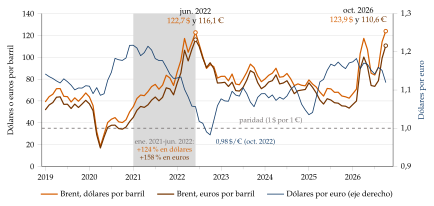
Fuente: Elaboración propia con datos de U.S. Energy Information Administration (2026) (Brent, dólares por barril) y Banco Central Europeo (2026a) (dólares por euro, media mensual); el Brent en euros es el precio en dólares dividido por el tipo de cambio. Medias mensuales, enero de 2019-octubre de 2026. En 2022 las 2 líneas del Brent se separan: el euro se deprecia y la energía sube más en euros que en dólares.
e) Valoración
Lo que aporta: es el marco con el que se piensa hoy la política monetaria de una economía abierta, con un criterio de bienestar para comparar reglas y regímenes.
Sus límites: mercados completos, traspaso completo y economía pequeña; sin deuda exterior ni efectos sobre los demás países.
Recapitulación de III: en una economía abierta la estructura del modelo es la misma, pero las perturbaciones llegan también por el tipo de cambio y el tipo de interés mundial. La flotación amortigua las reales de demanda; el banco central debe mirar la inflación interna, y sin moneda propia la política fiscal, la devaluación fiscal y las políticas de oferta sustituyen al tipo de cambio.
Conclusión
Recapitulación:
En conclusión, la renta y la inflación de una economía abierta se determinan con una demanda agregada que nace de Mundell-Fleming y depende del tipo de cambio real, y una oferta que paga lo importado; su versión moderna es el modelo neokeynesiano, que distingue las perturbaciones de demanda de las de costes.
Ante una perturbación de demanda, la política monetaria (o, sin ella, la fiscal) estabiliza a la vez renta e inflación; ante una de costes, la política de demanda solo reparte el golpe, y las de oferta son las únicas que mejoran las 2.
En una economía abierta, el régimen cambiario decide qué instrumento queda y qué inflación conviene estabilizar.
Relevancia:
Es el marco con el que el BCE y los gobiernos de la zona del euro han respondido a la Covid y a la energía cara de 2022 y de 2026: una política monetaria común, una política fiscal nacional y unas reformas que deciden la competitividad.
Extensiones:
La determinación del tipo de cambio [ver tema 3.B.14], la elección del régimen cambiario y las crisis [ver tema 3.B.15] [ver tema 3.B.17], las uniones monetarias [ver tema 3.B.16] y la coordinación internacional de las políticas [ver tema 3.B.19].
La economía española dentro del euro y su competitividad [ver tema 4.A.22].
Opinión:
Mundell-Fleming sigue siendo la mejor primera aproximación, y el modelo neokeynesiano la mejor guía para la política; pero las perturbaciones de verdad llegan mezcladas, y saber qué parte es de oferta y qué parte de demanda es la mitad de la respuesta.
Idea final:
Las desgracias nunca vienen solas: en 2020-2022 llegaron juntas una de oferta, una de demanda y otra de fuera, por el precio de lo que se importa y por el tipo de cambio con que se paga.
Las políticas de demanda deciden cómo se reparte el golpe, y su eficacia depende del régimen cambiario; solo las de oferta hacen que la próxima desgracia duela menos.
A. Anexo: el modelo de Mundell-Fleming paso a paso
Las 3 ecuaciones, con \(P=P^*=1\) (luego \(q=E\)): \[\begin{aligned} \text{IS:}&\quad \big[1-c\,(1-t)+m\big]\,Y=\overline{A}-b\,i+x\,Y^*+\nu\,E,\\ \text{LM:}&\quad M=k\,Y-h\,i,\\ \text{BP:}&\quad x\,Y^*-m\,Y+\nu\,E+\beta_K\,(i-i^*)=0 . \end{aligned}\]
Tipo fijo (\(E=\overline{E}\); incógnitas \(Y\), \(i\) y \(M\)). De la BP, \(i=i^*+(m\,Y-x\,Y^*-\nu\,\overline{E})/\beta_K\); llevándolo a la IS y multiplicando por \(\beta_K\), \[Y=\frac{\beta_K\,\overline{A}-b\,\beta_K\,i^*+(b+\beta_K)\,(x\,Y^*+\nu\,\overline{E})}{D_F},\qquad D_F\equiv\big[1-c\,(1-t)\big]\,\beta_K+m\,(b+\beta_K),\] con \(D_F\) local de este anexo, y la cantidad de dinero sale de la LM. Los multiplicadores son \[\frac{\partial Y}{\partial\overline{G}}=\frac{\beta_K}{D_F},\quad \frac{\partial Y}{\partial\overline{E}}=\frac{\nu\,(b+\beta_K)}{D_F},\quad \frac{\partial Y}{\partial Y^*}=\frac{x\,(b+\beta_K)}{D_F},\quad \frac{\partial Y}{\partial i^*}=-\frac{b\,\beta_K}{D_F},\quad \frac{\partial Y}{\partial M}=0 .\]
La compra de bonos por el banco central sube el crédito interno y baja las reservas en lo mismo: \(M\) no cambia.
\(\partial(\beta_K/D_F)/\partial\beta_K=m\,b/D_F^2>0\): la fiscal gana eficacia con la movilidad.
Con \(\beta_K\to\infty\), \(\partial Y/\partial\overline{G}\to1/[1-c\,(1-t)+m]\), el multiplicador abierto con \(i=i^*\). Con \(\beta_K=0\), \(\partial Y/\partial\overline{G}=0\) y \(Y=(x\,Y^*+\nu\,\overline{E})/m\), la renta que equilibra el comercio.
Tipo flexible (\(M\) dado; incógnitas \(Y\), \(i\) y \(E\)). La BP da \(x\,Y^*+\nu\,E=m\,Y-\beta_K\,(i-i^*)\); llevándolo a la IS, se cancelan \(m\,Y\) y el comercio: \[\big[1-c\,(1-t)\big]\,Y=\overline{A}-(b+\beta_K)\,i+\beta_K\,i^* ,\] una IS de economía cerrada con sensibilidad \(b+\beta_K\). Con la LM, \(i=(k\,Y-M)/h\), y multiplicando por \(h\), \[Y=\frac{h\,\overline{A}+(b+\beta_K)\,M+h\,\beta_K\,i^*}{D_X},\qquad D_X\equiv h\,\big[1-c\,(1-t)\big]+(b+\beta_K)\,k ,\] y el tipo de cambio sale de la BP, \(\nu\,E=m\,Y-x\,Y^*-\beta_K\,(i-i^*)\). Los multiplicadores son \[\frac{\partial Y}{\partial\overline{G}}=\frac{h}{D_X},\quad \frac{\partial Y}{\partial M}=\frac{b+\beta_K}{D_X},\quad \frac{\partial Y}{\partial Y^*}=0,\quad \frac{\partial Y}{\partial i^*}=\frac{h\,\beta_K}{D_X}>0 .\]
\(\partial(h/D_X)/\partial\beta_K=-h\,k/D_X^2<0\) y \(\partial[(b+\beta_K)/D_X]/\partial\beta_K=h\,[1-c\,(1-t)]/D_X^2>0\).
Con \(\beta_K=0\), los multiplicadores son los del IS-LM cerrado sin importaciones, \(1/[1-c\,(1-t)+b\,k/h]\) y \(b/\{h\,[1-c\,(1-t)]+b\,k\}\) [ver tema 3.A.5]: el tipo de cambio mantiene el comercio equilibrado y anula la fuga de las importaciones. Con \(\beta_K\to\infty\), la fiscal da 0 y la monetaria \(1/k\).
Aislamiento: \(Y\) no depende de \(Y^*\), porque una caída de la demanda exterior deprecia la moneda lo justo para compensarla. Una subida de \(i^*\) sí sube la renta en el modelo, porque deprecia la moneda; en los datos, en cambio, la subida de los tipos de la Reserva Federal contrae a los demás por el canal financiero.
Los déficits gemelos. Con tipo flexible y \(\beta_K\to\infty\), \(i=i^*\) e \(Y=(M+h\,i^*)/k\) no dependen de \(\overline{G}\); como el consumo y la inversión tampoco cambian, \(\Delta XN=\nu\,\Delta E=-\Delta\overline{G}\): la moneda se aprecia y el saldo comercial empeora en lo que sube el gasto. Con tipo fijo, \(\Delta XN=-m\,\Delta Y=-m\,\Delta\overline{G}/[1-c\,(1-t)+m]\).
∎
B. Anexo: oferta y demanda agregadas abiertas paso a paso
La DA con movilidad perfecta. Con \(P\) variable, \(q=EP^*/P\), \(i=i^*\), y (6):
con tipo fijo, \(\dfrac{\partial Y}{\partial P}=-\dfrac{\nu\,\overline{E}P^*}{[1-c\,(1-t)+m]\,P^2}<0\) (solo el efecto competitividad);
con tipo flexible, \(\dfrac{\partial Y}{\partial P}=-\dfrac{M}{k\,P^2}<0\) (solo el efecto saldos reales).
Con movilidad imperfecta actúan los 2 canales.
El medio plazo con tipo fijo. En \(Y=Y^n\), la IS da \(\nu\,\overline{E}P^*/P=[1-c\,(1-t)+m]\,Y^n-\overline{A}+b\,i^*-x\,Y^*\): más gasto exige un \(q\) menor (una apreciación real), y \(\nu\,\Delta q=-\Delta\overline{G}\).
El camino hacia el medio plazo con tipo fijo, en 3 pasos:
Paso 1: con la inflación esperada igual a la exterior, \(\bar\pi=\gamma_{P^*}\), la curva de Phillips en producción es \(\pi_t-\bar\pi=\kappa_Y\,(Y_t-Y^n)\), con \(\kappa_Y>0\) (local).
Paso 2: con \(E\) fijo, el tipo real cambia lo que la inflación exterior supera a la nacional: \(\gamma_{q,t}\simeq\gamma_{P^*}-\pi_t=-\kappa_Y\,(Y_t-Y^n)\).
Paso 3: si \(Y_t<Y^n\), \(q\) sube (depreciación real), las exportaciones netas crecen y la renta se acerca a \(Y^n\); el proceso solo se para con \(Y_t=Y^n\) y \(\pi_t=\gamma_{P^*}\). Una devaluación de la cuantía adecuada da ese mismo \(q\) de una vez.
La cuña exterior. Con una parte \(\alpha\) de importaciones en el consumo, el índice de precios de consumo es \(P_C=P^{1-\alpha}(EP^*)^{\alpha}\) (\(P_C\) local), luego \(P_C/P=(EP^*/P)^{\alpha}=q^{\alpha}\). Con la curva de salarios escrita con el índice de consumo y la de precios del modelo WS-PS [ver tema 3.A.28], \[\frac{W}{P_C^e}=F(U,Z)\cdot\mathrm{PAT}^e,\qquad \frac{W}{P}=\frac{\mathrm{PAT}}{1+\mu}\quad\Longrightarrow\quad P=(1+\mu)\,P_C^e\,F(U,Z)\,\frac{\mathrm{PAT}^e}{\mathrm{PAT}} .\]
A corto plazo, con \(P_C^e\) dado y \(U\) que baja cuando sube \(Y\), es la OA creciente; sube si suben los precios de consumo esperados (una depreciación esperada), el margen (la energía) o \(Z\).
A medio plazo, con \(P_C^e=P_C\) y \(\mathrm{PAT}^e=\mathrm{PAT}\), \(1=(1+\mu)\,q^{\alpha}F(U^n,Z)\), que es (7). Como \(F_U<0\), un \(q\) o un \(\mu\) mayores bajan \(F(U^n,Z)\) y suben \(U^n\). Con \(\alpha=0\) es la NAIRU de la economía cerrada.
Un matiz: con \(E\) fijo, un \(P\) mayor baja \(q\) y la NAIRU, y la OA de largo plazo se inclina algo hacia la derecha; con \(E\) flexible, \(q\) lo fijan factores reales y es vertical. El cuerpo la dibuja vertical, para una cuña dada.
La inflación de consumo. En logaritmos, \(\ln P_C=(1-\alpha)\ln P+\alpha\,(\ln E+\ln P^*)\); en primeras diferencias, con \(\pi_{H,t}\equiv\Delta\ln P_t\), es (8).
El modelo de demandas rivales en el plano \((Y,q)\) (gráfico 9):
la EDR (equilibrio de las demandas rivales) es (7) escrita en producción: los pares \((Y,q)\) en los que trabajadores, empresas y proveedores extranjeros aceptan su parte de la renta y la inflación no se mueve. Es decreciente: con más \(q\), el salario de consumo que deja el margen es menor, y para que los salarios pedidos quepan hace falta más paro, menos \(Y\). Por encima hay presiones inflacionistas; por debajo, deflacionistas;
la BC (equilibrio comercial) es creciente: más renta, más importaciones, y hace falta más competitividad;
la DA (equilibrio del mercado de bienes) es creciente y más inclinada que la BC: una depreciación sube la renta, pero, como hay otras fugas además de las importaciones, el comercio queda con superávit.
Un encarecimiento de la energía importada desplaza las 3 a la izquierda: la EDR, porque baja el salario de consumo compatible con el margen; la BC, porque hace falta más depreciación para cada renta; la DA, porque parte del gasto se va en la energía. El nuevo equilibrio, \(E'\), tiene menos producción y un tipo real más depreciado. Si se intenta compensar con estímulos, la inflación sigue subiendo (el error de 1973). Con tipo fijo, la inflación aprecia el tipo real y lleva la economía a la EDR con déficit comercial, y corregirlo exige ajuste fiscal y devaluación; con tipo flexible, la espiral de inflación y depreciación solo aparece si el banco central acomoda.
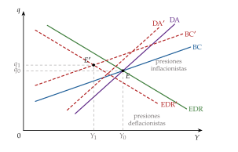
Fuente: Elaboración propia a partir de Layard, Nickell y Jackman (1991) y Carlin y Soskice (2015). EDR: equilibrio de las demandas rivales sobre la renta (inflación estable); BC: equilibrio de la balanza comercial; DA: equilibrio del mercado de bienes. El encarecimiento de la energía desplaza las 3 a la izquierda (en rojo) y el equilibrio pasa de \(E\) a \(E'\).
∎
C. Anexo: el modelo neokeynesiano paso a paso
La DA, la OA y la forma reducida en la economía cerrada, en 3 pasos:
Paso 1: con expectativas dadas (\(\mathbb{E}_t[x_{t+1}]=\mathbb{E}_t[\pi_{t+1}]=0\), perturbaciones transitorias), la IS es \(x_t=-\frac{1}{\theta}(i_t-r^n_t)\) y la NKPC, \(\pi_t=\kappa\,x_t+u_t\).
Paso 2: con la regla (11) dentro de la IS, \((\theta+\phi_x)\,x_t=-\phi_{\pi}\,\pi_t+\hat r^n_t-\varepsilon_t\), con \(\hat r^n_t\equiv r^n_t-\rho\): es la DA (12), decreciente con pendiente \(-(\theta+\phi_x)/\phi_{\pi}\).
Paso 3: sustituyendo la NKPC, \((\theta+\phi_x+\phi_{\pi}\kappa)\,x_t=\hat r^n_t-\phi_{\pi}\,u_t-\varepsilon_t\), que es (13). Con \(u_t=0\) e \(i_t\) que sigue a \(r^n_t\), \(x_t=\pi_t=0\): la divina coincidencia.
La perturbación tecnológica: con precios flexibles, la producción natural es \(y^n_t=\psi\,a_t\), con \(a_t\equiv\ln A_t\) y \(\psi\equiv(1+\varphi)/(\theta+\varphi)\) (local), y el tipo natural, \(r^n_t=\rho+\theta\,\mathbb{E}_t[\Delta y^n_{t+1}]\) más los términos de demanda. Con una mejora transitoria, \(\mathbb{E}_t[\Delta y^n_{t+1}]<0\) y \(r^n_t\) baja: la DA se desplaza a la izquierda.
La economía abierta (Galí y Monacelli). Notación: minúsculas en logaritmos; \(\sigma_{HF}\) es la elasticidad de sustitución entre bienes nacionales y extranjeros y \(\sigma_F\) la que hay entre bienes de distintos países extranjeros (locales).
El consumo y sus precios: \[C_t=\Big[(1-\alpha)^{\frac{1}{\sigma_{HF}}}C_{H,t}^{\frac{\sigma_{HF}-1}{\sigma_{HF}}}+\alpha^{\frac{1}{\sigma_{HF}}}C_{F,t}^{\frac{\sigma_{HF}-1}{\sigma_{HF}}}\Big]^{\frac{\sigma_{HF}}{\sigma_{HF}-1}},\qquad P_t=\Big[(1-\alpha)P_{H,t}^{1-\sigma_{HF}}+\alpha\,P_{F,t}^{1-\sigma_{HF}}\Big]^{\frac{1}{1-\sigma_{HF}}}.\] Log-linealizando, \(p_t=(1-\alpha)\,p_{H,t}+\alpha\,p_{F,t}=p_{H,t}+\alpha\,\tau_t\), y en diferencias, (15).
Ley del precio único y tipo de cambio real: \(p_{F,t}=e_t+p^*_t\), luego \(\tau_t=e_t+p^*_t-p_{H,t}\), que es el logaritmo del \(q\) del apartado I.2 (con el deflactor). El tipo real con los índices de consumo es \(e_t+p^*_t-p_t=(1-\alpha)\,\tau_t\).
Reparto del riesgo: con mercados completos, \(c_t=c^*_t+\frac{1}{\theta}(1-\alpha)\,\tau_t\), y como el mundo es cerrado, \(c^*_t=y^*_t\).
Vaciado del mercado de bienes nacionales: \(y_t=c_t+\frac{\alpha\,\Psi}{\theta}\,\tau_t\), con \(\Psi\equiv\theta\sigma_F+(1-\alpha)(\theta\sigma_{HF}-1)\) (local). Juntando las 2, \[y_t=y^*_t+\frac{1}{\theta_{\alpha}}\,\tau_t,\qquad \theta_{\alpha}\equiv\frac{\theta}{(1-\alpha)+\alpha\,\Psi}=\frac{\theta}{1+\alpha\,\Theta},\qquad \Theta\equiv\Psi-1=(\theta\sigma_F-1)+(1-\alpha)(\theta\sigma_{HF}-1).\]
La IS: la ecuación de Euler, \(c_t=\mathbb{E}_t[c_{t+1}]-\frac1\theta(i_t-\mathbb{E}_t[\pi_{t+1}]-\rho)\), con las 2 relaciones anteriores y (15), da \[y_t=\mathbb{E}_t[y_{t+1}]-\frac{1}{\theta_{\alpha}}\big(i_t-\mathbb{E}_t[\pi_{H,t+1}]-\rho\big)+\alpha\,\Theta\,\mathbb{E}_t[\Delta y^*_{t+1}] .\] Restando la misma ecuación con precios flexibles (\(y^n_t\)) sale (16), con \(r^n_t=\rho+\theta_{\alpha}\,\mathbb{E}_t[\Delta y^n_{t+1}]+\alpha\,\theta_{\alpha}\Theta\,\mathbb{E}_t[\Delta y^*_{t+1}]\).
La curva de Phillips: el coste marginal real depende de la producción propia y de la mundial, y en desviación de la economía con precios flexibles es \(\widehat{\mathrm{cmg}}_t=(\theta_{\alpha}+\varphi)\,x_t\). Con Calvo, \(\pi_{H,t}=\beta\,\mathbb{E}_t[\pi_{H,t+1}]+\frac{(1-\eta)(1-\beta\eta)}{\eta}\widehat{\mathrm{cmg}}_t\), que es (17) (sin \(u_t\)).
El caso especial: con \(\theta=\sigma_{HF}=\sigma_F=1\), se tiene \(\Psi=1\), \(\Theta=0\), \(\theta_{\alpha}=\theta\) y \(\kappa_{\alpha}=\kappa\): el modelo es el cerrado. Con un subsidio al empleo que corrige el margen y el incentivo a mejorar la relación de intercambio, la asignación con precios flexibles es eficiente y la política óptima es \(\pi_{H,t}=0\), \(x_t=0\) en todo periodo.
Las reglas (18): con la regla de la inflación interna, el tipo de cambio y \(\tau_t\) fluctúan menos que con la óptima; con la del consumo, menos todavía, y con el tipo fijo el nominal no se mueve. Cuanto menos fluctúa \(\tau_t\), más fluctúan la brecha y la inflación interna, y mayor es la pérdida: el tipo fijo es, en todas las calibraciones, el peor.
∎
D. Anexo: perturbaciones sectoriales y redes de producción
El modelo: \(n\) industrias producen en competencia perfecta con una tecnología Cobb-Douglas, \(y_i=e^{z_i}\,l_i^{\alpha^l_i}\prod_j x_{ij}^{a_{ij}}\), con \(\alpha^l_i+\sum_j a_{ij}=1\), donde \(x_{ij}\) es lo que la industria \(i\) compra a la \(j\) y \(z_i\) una perturbación de productividad (locales de este anexo). De la maximización del beneficio, \(a_{ij}=p_j\,x_{ij}/(p_i\,y_i)\): la matriz \(\mathbf A=(a_{ij})\) es la de insumo-producto, y su inversa de Leontief, \(\mathbf H\equiv(\mathbf I-\mathbf A)^{-1}=(h_{ij})\), recoge los efectos directos e indirectos por toda la red [ver tema 3.A.31].
Perturbaciones de oferta: aguas abajo. Ante cambios de productividad, \[\mathrm{d}\ln y_i=\underbrace{\mathrm{d}z_i}_{\text{efecto propio}}+\underbrace{\sum_{j}(h_{ij}-\mathbb 1_{j=i})\,\mathrm{d}z_j}_{\text{efecto red}}\quad\Longleftrightarrow\quad \mathrm{d}\ln\mathbf y=\mathbf H\,\mathrm{d}\mathbf z :\] si cae la productividad de una industria, sube su precio y caen la producción de las que la usan como insumo.
Perturbaciones de demanda: aguas arriba. Una caída del gasto en una industria reduce lo que compra a sus proveedores, y se propaga hacia ellos.
Un ejemplo con 4 industrias (figura 4): la 1 compra a la 2 y a la 4 y vende a la 3 y a la 4. Una perturbación de oferta en la 1 llega a la 3 y a la 4, no a la 2 (con Cobb-Douglas, el efecto precio y el efecto cantidad se compensan); una de demanda llega a la 2 y a la 4, no a la 3.
La evidencia: con datos sectoriales de Estados Unidos de 1991 a 2009, el efecto de las perturbaciones a través de la red es mayor que el directo, un multiplicador de red.
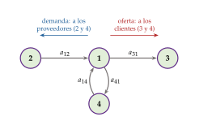
Fuente: Elaboración propia a partir de Acemoglu, Akcigit y Kerr (2016). Las flechas van del proveedor al comprador, con el peso \(a_{ij}\) del insumo \(j\) en la producción de \(i\).
∎
E. Anexo: perturbaciones y respuestas de política
| Perturbación | Efecto | Con tipo flexible | Con tipo fijo o unión monetaria |
|---|---|---|---|
| Caída de la demanda interna | Menos renta e inflación | Bajar los tipos con el tipo natural (divina coincidencia) | Política fiscal |
| Caída de la demanda exterior | Menos exportaciones y renta | La depreciación la compensa (aislamiento) | Cae la renta: política fiscal |
| Subida del tipo de interés mundial | Salida de capitales | Depreciación; por el canal financiero, contracción | Sube el tipo propio: cae la inversión |
| Encarecimiento de la energía importada | Estanflación; inflación importada | Mirar a través del efecto directo y responder a la segunda ronda; la depreciación puede amplificarla | Política fiscal focalizada y temporal; política de oferta (energía) |
| Mejora de la productividad | Más producción, menos precios | Política monetaria más expansiva: \(\pi_{H}=0\) | El ajuste de los precios relativos, por los precios |
| Pérdida de competitividad | Déficit exterior y paro | Depreciación nominal | Devaluación interna, devaluación fiscal, reformas |
Fuente: Elaboración propia a partir de Mundell (1963), Galí y Monacelli (2005), Blanchard y Galí (2010) y Farhi, Gopinath y Itskhoki (2014). En azul, perturbaciones de demanda; en rojo, de oferta adversas; en verde, de oferta favorables.
F. Anexo: aspectos para el test
Preguntas tipo test del primer ejercicio: simulador de test.
Fechas y obras:
Fleming (1962), en las IMF Staff Papers, y Mundell (1963), en el Canadian Journal of Economics and Political Science: el modelo IS-LM-BP. Mundell (1962): la asignación de los instrumentos. Robert Mundell, Nobel de 1999.
Meade (1951): equilibrio interno y externo (Nobel de 1977, con Bertil Ohlin); Tinbergen (1952): tantos instrumentos como objetivos; Swan (1963), escrito en 1955.
Dornbusch (1976): sobrerreacción del tipo de cambio. Obstfeld y Rogoff (1995): nueva macroeconomía abierta. Clarida, Galí y Gertler (1999) y Woodford (2003): el modelo neokeynesiano (Nobel de 2026 a Woodford, con Hall). Galí y Monacelli (2005): economía pequeña neokeynesiana; Galí y Monacelli (2008): unión monetaria.
Blanchard y Quah (1989): la oferta tiene efectos permanentes; Galí (1999): tecnología y horas; Hamilton (1983): petróleo y recesiones; Kilian (2009): no todas las perturbaciones del petróleo son iguales; Bruno y Sachs (1985): estanflación y salarios reales rígidos; Guerrieri et al. (2022): perturbaciones de oferta keynesianas.
Trampas típicas:
La BP vertical es movilidad nula (\(\beta_K=0\)), no perfecta; su pendiente es \(m/\beta_K\).
Con tipo fijo, la política monetaria es ineficaz con cualquier movilidad, porque el dinero es endógeno; lo que cambia es la rapidez con que se pierden las reservas.
Con tipo flexible y movilidad perfecta, la fiscal es ineficaz porque expulsa exportaciones netas, no inversión.
Con tipo fijo, la DA abierta tiene pendiente negativa por el efecto competitividad; con flexible, por el efecto saldos reales.
\(E\) es el tipo directo: si sube, la moneda nacional se deprecia; \(q=EP^*/P\) sube con la depreciación real.
Con tipo flexible, la renta no depende de la demanda exterior en el modelo (aislamiento), pero sí del tipo de interés mundial.
En el modelo neokeynesiano, una perturbación tecnológica desplaza la DA (por el tipo natural), no la NKPC, y no rompe la divina coincidencia; la rompen las de costes.
En el modelo de Galí y Monacelli, la regla con la inflación interna domina a la de la inflación de consumo, y esta al tipo fijo; la divina coincidencia vale para \(\pi_{H,t}\), no para la del consumo.
Una perturbación de oferta mueve producción y precios en sentido contrario; una de demanda, en el mismo.
El cuarteto imposible (Padoa-Schioppa, 1988) añade el libre comercio a los 3 objetivos del trilema.
En Blanchard y Quah (1989), la demanda no tiene efectos a largo plazo sobre la producción; la oferta, sí.
Bibliografía
Hicks recibió el Premio Nobel de Economía en 1972, con Kenneth Arrow, «por sus contribuciones pioneras a la teoría del equilibrio económico general y a la teoría del bienestar».↩︎
Robert Mundell recibió el Premio Nobel de Economía en 1999 «por su análisis de la política monetaria y fiscal con distintos regímenes cambiarios y su análisis de las áreas monetarias óptimas».↩︎
Michael Woodford recibió el Premio Nobel de Economía en 2026, con Robert E. Hall, «por los fundamentos microeconómicos de la estabilización macroeconómica».↩︎
A corto plazo puede empeorarlo antes de mejorarlo, la curva J: los pedidos se cierran con meses de antelación, de modo que los volúmenes responden todavía al tipo de cambio antiguo mientras la depreciación ya encarece, en moneda nacional, lo importado. En los países industriales suele durar entre 6 meses y un año.↩︎
En esta exposición \(\beta_K\) lleva subíndice porque \(\beta\) es el factor de descuento del modelo neokeynesiano (II). Es un enfoque de flujos: mientras haya diferencial, entra capital. Su crítica está en la valoración del modelo.↩︎
James Meade recibió el Premio Nobel de Economía en 1977, con Bertil Ohlin, «por su contribución pionera a la teoría del comercio internacional y de los movimientos internacionales de capital».↩︎
Paul Krugman recibió el Premio Nobel de Economía en 2008 «por su análisis de los patrones del comercio y de la localización de la actividad económica».↩︎
Milton Friedman recibió el Premio Nobel de Economía en 1976 «por sus logros en el análisis del consumo, la historia y la teoría monetarias y por demostrar la complejidad de la política de estabilización».↩︎
Jan Tinbergen recibió el Premio Nobel de Economía en 1969, con Ragnar Frisch, «por desarrollar y aplicar modelos dinámicos para el análisis de los procesos económicos».↩︎
Aquí \(\alpha\) es el grado de apertura del consumo, no la participación del capital de la función Cobb-Douglas. Es la misma \(\alpha\) en todo el tema.↩︎
Joseph Stiglitz recibió el Premio Nobel de Economía en 2001, con George Akerlof y Michael Spence, «por sus análisis de los mercados con información asimétrica».↩︎
Daron Acemoglu recibió el Premio Nobel de Economía en 2024, con Simon Johnson y James Robinson, «por sus estudios sobre cómo se forman las instituciones y cómo afectan a la prosperidad».↩︎
La relación entre la centralización de la negociación colectiva y el salario real o el paro tiene forma de joroba: bajos en los 2 extremos y máximos en el nivel intermedio.
↩︎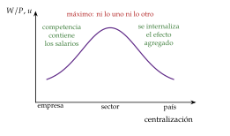
Ben Bernanke recibió el Premio Nobel de Economía en 2022, con Douglas Diamond y Philip Dybvig, «por sus investigaciones sobre los bancos y las crisis financieras».↩︎
Christopher Sims recibió el Premio Nobel de Economía en 2011, con Thomas Sargent, «por su investigación empírica sobre la causa y el efecto en la macroeconomía».↩︎
Es la versión petrolera del debate sobre la Gran Moderación: de la caída de la volatilidad del producto en Estados Unidos, entre el 20 y el 30 % se debería a una mejor política, otro 20-30 % a la buena suerte identificable (perturbaciones de productividad y de materias primas más pequeñas) y el 40-60 % restante a perturbaciones más pequeñas sin identificar.↩︎
Robert Lucas recibió el Premio Nobel de Economía en 1995 «por haber desarrollado y aplicado la hipótesis de las expectativas racionales, transformando así el análisis macroeconómico y profundizando en la comprensión de la política económica».↩︎
\(\tau_t\) es la inversa de la relación real de intercambio (\(P_X/P_M\)): sube cuando esta empeora. Con la ley del precio único, \(\tau_t=e_t+p^*_t-p_{H,t}\), con \(e_t\equiv\ln E_t\), y la identidad (15) es la misma que (8).↩︎